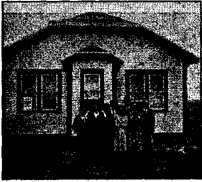
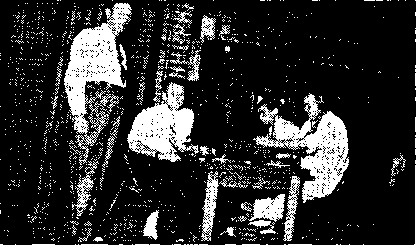
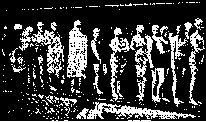
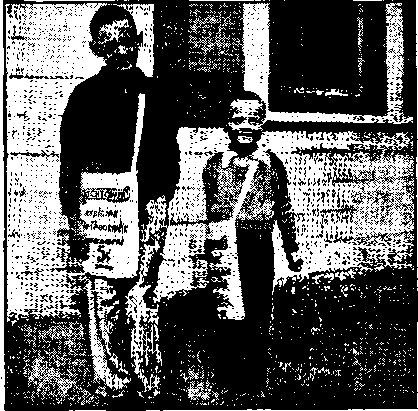
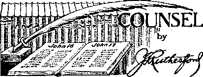

Contents
The Hierarchy’s Fifth Column (Part 1)
Hypocrisy in a Patriotic Press
Press Calls Attention to the Law
Judge Rutherford’s Counsel
“A Little Gray Home in the West” 13
Counsel by J. F, Rutherford
British Comment ■
How Does It Look Now? ■ t 25
Cassandra and Judge Richardson
■ Worse Countries than England
British “Kingdom News” 28, 29
Published every other Wednesday by WATCHTOWER BIBLE AND TRAQT SOCIETY, INC.
117 Adams St., Brooklyn, N. Y., U. S. A.
Editor Clayton J. Woodworth
Business Manager Nathan H, Knorr
Five Cents a Copy
|1 a year In the United States ll.SS to Canada and all other countries
NOTICE TO SUBSCRIBERS
Remittances: For your own safety, remit by postal or express money order. When coin or currency is lost In the ordinary malls, there is no redress. Remittances from countries other than those named below may be made to the Brooklyn office, but only by International postal money order.
Receipt of a new or renewal subscription will be acknowledged only when requested. Notice of Expiration is sent with the journal one month before subscription expires, Please renew promptly to avoid loss of copies. Send change of address direct to us rather than to the post office. Tour request should reach us at least two weeks before the date of issue with which it is to taka effect. Sand your old as well as the new address. Copies will not be forwarded by the post office to your new address unless extra postage is provided by you.
Published also In Afrikaans, Bohemian, Danish, Dutch, Fitinish, French, German, Greek, Hungarian, Japanese, Norwegian, Polish, Portuguese, Spanish, Swedish, Ukrainian; also special Australian edition in English.
' OFFICES FOR OTHER COUNTRIES
England 34 Craven Terrace, London, W. 2
Canada 40 Irwin Avenue, Toronto 6, Ontario
Australia 7 Beresford Road, Strathfleld, N.S.W. South Africa 623 Boston House, Capo Town
Entered as second-class matter at Brooklyn, N. Y., under the Act’of March 3, 2879*.
. Appetizers
Answer to Anxious Inquirer ' '
“Without consulting authorities on etiquette >..(? —in fact, giving it to you offhand, so to speak -—we would say that at the following times and on the following occasions, respectively, the hat should be removed or lifted as circumstances indicate:
“When mopping the brow, when taking a bath, when eating; when going to hed, when* takijfg up a collection, when having the hair trimmed, when being shamppoed, when standing on the head,”—Labor.
No Park for Him
No, thank you, I have no desire to'go to the park, ^fy eldest daughter does the kangaroo i walk, my second daughter talks like a parrot, my son laughs like a hyena, my wife watches me like a hawk, my cook is as cross as a bear, and my mother-in-law says I am an old gorilla. When I go anywhere I want a change.— Australian Consolation.
The Destination of Business •
A noted preacher was holding a revival meeting. One evening he got up and said;. “Now, everybody that wants to go to heaven, stand up.” All stood up but one Jew, The ■ preacher said, “Ikey, why don’t you want to go to heaven?” The Jew said: “Business has gone to the other place, and I prefer to stay in business.”—Kdlygram.
Sam Saw the Ghost
“Yes, suh, Ah’d j’st come out o’ de cowshed wid a pail of milk in mah hand. Den I hears a noise an’ de ghost rushes out. Ah shook so . dat when I got to de house dere was no milk in mah pail, only jest two pounds o’ buttah.”
Dead Certain! 1
Patient: But are you sure your diagnosis is correct? Sometimes people are treated for influenza and die of something else.
Doctor: When I treat a person for influenza, . he dies of influenza.
The Deadly Microbe
“If you refuse me,” he said, “I shall die.”
She refused him. . .
Sixty years later he died.
“And in His name shall the nations hope. ”—Matthew 12:21, A.R.V.
Volume XXI Brooklyn, N. ¥., Wednesday, July 10; 1940 Number 543
(In Two Parts—Part 1)
JEHOVAH, the Almighty God, is now maneuvering the enemy into position for the final war, the battle of Armageddon, The exact hour for this has been set for thousands of years, and it will begin on time. In Eccle-r siastes 3, verse 8, Jehovah declares that there is a time of war and a time of peace; at Isaiah 14, verse 24, and chapter 46, verse 11, He declares that He will accomplish all His purposes, “Kpown unto God are all his works, from the beginning of the world,” (Acts 15:18) The Lord preserves the righteous, but the wicked are certain of destruction at His hands. (Psalm 145:20) Jehovah hates “a proud look, a lying tongue, and hands that shed innocent blood, an heart that deviseth wicked imaginations [(Leeser) a heart that contriveth plans of injustice], feet that be swift in running to mischief, a false witness that speaketh lies”.—Proverbs 6:17-19.
Jehovah foreknew the workings of the Hierarchy and caused this apt prophetic description to be made of them. Note the phrase 'a heart that deviseth plans of injustice’. Several thousands of years ago God foreknew that they would lie about His witnesses and devise plans of injustice, such as labeling them as Fifth Columnists, and plant violence in the minds of Legionnaires and hoodlums in their fight against The Theocracy. In actual fact the Roman Catholic Hierarchy and her aids form the Fifth Column or Spy Column of the Murderer-in-Chief Hitler. These facts are particularly presented to those who may have been innocently involved in the attacks.on Jehovah’s witnesses in Texas and elsewhere. Let such pause and review the documented evidence herein, that they may not suffer the fate of the deliberate wrongdoers.
The Hierarchy is expecting to increase the operations of the Fifth Column in conjunction with the ” Catholic revolutionary movement” of Adolf Hitler. Hitler and the Hierarchy have an identity of design, the reestablishment of the “Holy Roman Empire”, this time to take in the whole earth. To befuddle the minds of the people they are warning them against sueh inroads from the Spy Column. Thus they are making the fire and hollering “Fire” at the same time. To carry out this deception which is working so much injury on innocent people they have employed the American Legion to denounce Jehovah’s witnesses as members of the Fifth Column, or Trojan horse. This has been especially vicious in Texas, but has also occurred by concerted action in California, Kentucky, Pennsylvania, New Jersey, Oklahoma, and other places. Everyone who knows Jehovah’s witnesses knows this denunciation is absolutely false. The sufferings of Jehovah’s witnesses in German^ are a monstrous record of infamy against the perpetrators, Hitler and the Catholic Gestapo. But such false accusations of the Lord’s people serve a two-fold purpose: to blacken the Lord’s name and His witness work among the uninformed, and to discredit Jehovah’s exposure of the Hierarchy so that they may calmly carry on their destruction of the democracy of the United States.
Hitler's Religion
It has never been denied by the Hierarchy that Hitler is a Catholic. It is not likely to -be bragged about, however, until he has ravaged all Europe, and then it will be time for an expression of gratitude from the pope and bestowal of the title “Defender of The Faith”. The Ulster Protestant makes this undeniable (April 1940 issue):
. . . The following facts prove beyond shadow of doubt that Hitler is not a Pagan, but a Roman Catholic: ■
(1) He was baptized a Roman Catholic; (2) he has never left the Roman Catholic Church; (3) he has never been ex-communicated; and (4), what is most significant, he calls himself a Roman Cath-die. Our authority for the last statement is Hitler himself. In the most recent edition of the German Who’s Who (Wer Tst’sf), and in his autobiographical sketch (which, in keeping with the.fuehrer's dignity, pre cedes all the other sketches in the volume), Hitler designates his religion as hath. Reference to the table of abbreviations (Ver Keich -nis der Abkuerzungen) shows that hath, stands for katholiseh—i.e., (Roman) Catholic, , . .
Adolph Hitler was born Roman Catholic, and to carry out his nefarious work has found ready material in sons of the Roman Church. . . ,
The Vaf-itwi and Nazism , , . [is} packed full of interesting facts which show the papal hand which has helped Hitler, who “has always shown a pronounced bias against Protestant Britain”.
These facts must be kept in mind in considering the advance of Rome in America. Soon the country is to be deluged with Nazi activities; in fact, is already grappling with the Jesuit Gestapo. Subtly they warn of this in advance to divert suspicion:
“We have to remember the Fifth Column. We must be aware of our enemies. It is not out of place today to bring to your attention the Fifth Column. For several years it has been operating in America but little was heard of it.” [Father J. A. McCaffrey, in a speech to the New York Rotary Club, quoted by the New York Times, May 24, 1940.)
“There will be no fifth column among the Catholics of America, for the Catholic when truest in his faith is truest to the laws of his country.” [William Cardinal O’Connell, in an address “at a solemn high mass in the Cathedra! of ^he Holy Cross”, Boston, Mass., quoted by the New York Times, June 3, 1940.]
These two men probably know more about Fifth Column activities than any others not of the same fraternity in America. As to their protestations of innocence the little verse of Thomas Hardy, English, novelist, seems particularly apropos:
“ 'Peace upon earth’, was said. We sing it. And pay a million priests to bring it.
And after two thousand years of Mass We’ve got as far as poison gas.”
Thomas Hardy did not live to see the more terrible weapons in the pope’s World War II, such as tanks and bombers that can annihilate nations. He did not know of the Blitzkrieg that so delights the heart of Prayerful Pius, the lightning war’ that is bringing the fulfillment of the pontiff’s fondest hopes, a Catholic World Empire. A Catholic sympathizer writing in the editorials of the Fort Wayne Jour-nal-Gazeite, April 18, 1940, expresses their real admiration of Hitler:
How They’ve Changed Their Tune
Adolf Hitler a half-baked rabble-rouser with
neurotic tendencies? Th kt’s what his critics used to Say about him, and say no longer. -
“Oh, yes, he’s been a shrewd party leader,” other so-called experts formerly stated. “But he knows little about diplomacy, and less about military affairs. He’s a poor judge of men.”
Such stuff is just 100 per cent incorrect, as the events of the last seven years—and especially of the last seven months—have convincingly proven.
Consider the weapons possessed by Hitler at the very outset, when'he began tinkering with the rusty economic machine of the German nation and the feeble military nucleus.
Then consider what the man has done since he assumed power on that fateful January day in 1933.
He built a new German army, a new German navy, an air force second to none. He marched into the Rhineland, achieved anschluss with Austria, absorbed Czechoslovakia, grabbed Memel and Danzig, conquered Poland, took Denmark into protective custody overnight, and employed dramatic “Trojan horse” tactics to seize control of Norway.
They said he would be twisted around the little finger of British diplomats. He twisted them around his little finger at Munich. ■
They thought he would ruin the German armed forces by ill-advised military and naval orders. At present he appears to have the Allies on the run.
They were “certain” Russia would fight on the side of the Allies, and Italy would at least remain neutral. Best current opinion is that both Russia and Italy may end up on the Nazi’s side.
Probably no man in all the world is hated more strenuously than Adolf Hitler, His aims, like-his methods, are distasteful to believers in representative self-government. But weak men are not hated; they are merely despised. Hitler, like Napoleon, is hated. Even more than Napoleon, he has gained every objective sought during his first period of power.
The worst mistake any man can make is to underestimate his adversary. Hitler’s adversaries underestimated him. They do so no longer, •
For the present at least, it appears that in the person of this once obscure son of a half-forgotteu Austrian customs official are combined the diplomatic brilliance of a Bismarck and the military genius of a Moltke together with skill in party leadership which cannot be compared with that of any other figure in German history.
How pitifully puny the Baldwins and the Chamberlains look alongside Hitler!
Hitler and His Church
Writing in the Boston Post, April 17, 1940, Clement A. Norton, just recently returned from Germany, states that after the occupation of Warsaw Hitler ordered that all church bells should be rung between noon and 1 p.m. for seven consecutive days in commemoration of that event. He stated that in Berlin St.
Hedvig’s cathedral church, the one Hitler attends, is thronged and in Munich the Germans parade to church as if nothing had happened. Referring also to the fact that at one time more than 100 Franciscans were on trial formoral rottenness, Norton says, admiringly:
Overnight these trials were suddenly called off and only one man' in all Germany could give the, order to halt those trials and that was Hitler. For months the German newspapers front-paged those trials and overnight every one of them was dropped.
The Films of Savagery
“The Nazis have made a film of the conquest of Poland—a film described by neutral correspondents as a terrible record of massacre. Cameramen accompanied the bombing and reconnaissance squadrons and thus made it possible for civilians thousands of miles away from the scene to see with their own eyes what happens when savage war is made from the sky. The Nazis are proud of this film and they regard it as a most effective instrument. It is an ominous sign that they have pow exhibited it in Sweden. They trust to it to help them in their main purpose, which is to break down the morale of Europe. For the most important fact about this war is that it takes us back to the type of life and the type of hero that the Nazis admire; it. takes us back to the days when Christianity, whose influence on German history they resent as enervating and enfeebling, had not yet softened manners and sharpened conscience. The Nazis set out to convince the world that there is no brutality that they would not commit. ■
“What Hitler, Goring, and Ribbentrop want to impress on the world is that destruction is the fate of any nation that resists the Nazis, and to teach it, that lesson they begin with savagery in cold blood. Methods to which passion may drive a people they use and prepare as calmly as a scientist preparing a chemical experiment.'’—Manchester Guardian.
dust, what infamy Hitler’s Nazis will do and what sympathy for them or affiliation with them implicates is briefly noted in a few dread instances. First is the statement of Eduard Renes, last president of Czechoslovakia, made to the London Press Club, and quoted in the New York Post. April 30, 1940:
“I do not exaggerate and I have no need to do so. . . . Every political prisoner was questioned alone, while he was at the. same time physically tortured, beaten, a.nd humiliated under such physical. conditions, in unhealthy rooms, with such impossible food, and under such nervous tension that JULY 10, 1840
hardly any left there without being broken for life. Hundreds of Czech officers received such treatment there that they died under the blows of the Nazi police—beaten to death in the most bestial fashion.”
Of the positive atrocities inflicted Dr. Benes said on March 29 that a house in Prague had been turned into a torture chamber where crudities are practiced more terrible than those inflicted on the Jews in concentration eamps.—Manchester Guardian, April 12, 1940.
Perhaps the betrayal of Norway by those whom Norway befriended is more terrible than the carnage of murderous -war.,“Mr. James,” as reported in the New York Times and the Forth Worth Star, “recounts that the Norwegians were surprised by the large numbers of German officers and men in the invading Nazi force who spoke well their language, which is not taught generally in German schools: In explanation Mr. Ja.mes reports” thaf after the World War 1 many Norwegians out of the goodness of their hearts took1 in many, undernourished children from Germany and Austria. They were voluntarily cared for by Norwegian families without cost to the State, finally, when they attained manhood, they went back to their native lands and returned with the Nazi invaders. Here is the gratitude of a Nazi.
This is the picture of the subjects of the dictator who said :
. “I shall shrink from nothing. . . . We shall be ruthless. , . . The instrument of terrorism is indispensable, less for its direct effects than for its undermining of the opposing will. . . . There is no such thing as truth, either in the moral or the scientific sense. ...” [Hermann Ilausehniiig, former president of the Danzig Senate; quoted from his Voice of Destruction, page 295; G. P. Putnam’s Sons, New York.]
Before considering the advance of the Nazi-Catholic Fifth Column in Texas let the sober-minded pause and think just, what the overrunning of this country by the Nazi-Catholics means. We all know honest Catholics who are loyal Americans. But how many will remain loyal when they are told to support Hitler and this command comes from agents of the pope, whom they are accustomed to obey? How many will question this command! Will not' the ignorant fall in line without even reading anything by “heretics”?
The Hierarchy claims 20,000,000 adherents in the United States. Let us assume that 5,000,000 will remain loyal to America even against their 'religion. This means that Hitler and the pope can count on 15,000,000 Nazis tp help “convert” the other Americans with
the people and at the same time destroy .an enemy of the pope, mobs incited by priests and bigoted members of the American Legion pounced on Jehovah’s witnesses. In Brownsville, Del Rio on the border, and in New Braunfels (Nazi stronghold), San Benito, • San Antonio, Harlingen, Midland, Odessa, Waxahachie, Stanton, and other near border cities, a concerted attack was perpetrated by lawless bands against Jehovah’s witnesses. Jehovah’s witnesses were accused of being the Fifth Column of Nazism. Note the newspaper scareheads intended to cover up the real Nazi . spies and priests and at once blacken those tellin'g the people the reason for the present conditions, including the Nazi-Catholic advance :
(Brownsville Herald, May 21, 1940) ' Fifth Column Combatted
San Benito—Anything that looks like a “fifth column” or a “Trojan Horse” will get short shrift in the Valley, speakers at an American Legion and Veterans of Foreign Wars mass meeting Monday night told an audience of 300 persons. ...
The mass meeting was the outgrowth of Saturday’s incident in which a group, including a Harlingen man and woman arid fifteen girls, were ordered out of San Benito after they had been distributing literature for a religious sect known as “Jehovah’s Witnesses.”
(Valiev Morning Star, Harlingen, Texas, May 21, 1940)
Legion Posts Will Battle Un-Americans
[Another story of the “bravery” of the Legion in expelling a man and a woman and fifteen young girls.]
(San Benito Light, May 20, 1940)
Mass Meeting Tonight in Legion Hall Group is Chased legion parley on subversive groups called [The first searehead was featured clear across the first page. Same story of the “heroism” of Captain Lew Williams of the machine-gun group, who rounded up a man and a woman and fifteen girls.] (Detroit News, May 23, 1940)
Texans Rout Nazi Agents
Del Rio, Texas. May 23, 1940—UP—The uprising of 400 people here to drive three professed Nazi agents from town was followed by reports from Austin today that Gov. W. Lee O’Daniel had ordered an immediate investigation of reported state-wide subversive activities,
Two of those expelled were women.
The man was threatened with a stoning . . .
The above action of the American Legion and fellow-mobsters was ridiculous as far as catching Nazis is concerned. The fact that Nazism was branded, and pictures of the
consolation
the helpful persuasion of bombs and tanks. When it is said “count on” it means that no low crime, from betrayal of relatives to the murder of fellow citizens, will be hesitated at by the fanatical followers of the fuehrer. Secretly at the confessional, even as it was broadcast that the pope approved Hitler, the word will be passed on that II Papa is really betting on son Hitler despite any “necessary” misstatements made by those not competent to speak the will of the “infallible” pope. It will get around, tn a week the favor of the pope made Roosevelt president of the United States! Again a country will be ravaged by madmen fighting to restore the Holy Roman Empire against the American descendants of the Huguenots, the Puritans, the Presbyterians, the Wesleyans, who escaped the Roman Catholic Inquisition more than two hundred years ago and who established these once free United States of America. Rome is marching! Let no one be deceived by the wolf’s Nazi costume.
Mexican Border Barrage
Texas is a state which once had grim memories of the aggressions of priests. So terrible were these experiences that their State Declaration of Independence names the priests as “the eternal enemies of the people”. Since then their vigil has relaxed and the infiltration of Rome’s hirelings, German, Mexican and Spanish, has been tremendous. New Braunfels, Texas, is a city of Nazis where aspersions against Hitler cause dangerous mutterings against the offender. If he has German rela-tivefi the horrible law of retaliation is used to torment them, according to a San Antonio press report. San Antonio itself is the city where “Father” Valenta, a Nazi priest, led several thousand parishioners against a Communist meeting at the beautiful municipal auditorium last summer. The Communists had permission to assemble from Mayor Maury Maverick, but, ignoring all law, the rioters hit policemen attempting to quell the mob and marched with Valenta at the head to the Alamo building. A little over a century ago this mob would have been blasted by the defenders of the Alamo. Today residents of San Antonio profess to believe it was merely a demonstr a- ■ tion by some Mexican boys.
Last week [Mr. Groves writes under date of June 8.—Ed.] this Fifth Column advanced under the camouflage of branding innocents as “Fifth Columnists”. Thinking to confuse
6 ■
Swastika displayed, in the copies of Consolation which some of Jehovah’s witnesses carried was used as a club by the lawbreakers in efforts to destroy and discredit their work because it exposes the Nazis and the Hierarchy. In several towns priests were seen going to the city halls just before the mob gathered, and in another instance a priest was seen exhorting a group to action. The American Legion well knows that Jehovah’s witnesses are not Nazis. Their action was a malicious breach of the law which they have sworn to uphold, and instead of serving to stem Nazism and the Fifth Column it had the reverse effect. The real Nazis, the Roman Catholic Hierarchy, priests and those under the control of priests, are shielded by the false accusation of others. Jehovah’s witnesses have constantly called attention to the advance of Nazism and its allies the Catholic authorities; consequently an attack on these witnesses acts as an aid to Nazism and strikes a blow at those who would expose Nazism. Again the Hierarchy is pushing forward her schemes behind the smoke-screen of vicious assaults on the Lord’s people, the only friends of the American commonwealth on earth today.
Daniel, Shadrach, Meshach and Abed-nego would not bow down to the image made by Nebuchadnezzar, but all were honored officials in Babylon. Mordecai would not bow down to Haman, the appointee of the Persian king, but he held a high position in the realm of Ahasuerus. Nehemiah was the king’s cupbearer under Artaxerxes and he was honored in the palace of Shushan. He was sad because Jerusalem, "the city, the place of my fathers’ sepulchres, lieth waste,” and he was sent by the king to repair it. He was accused of sedition, but the king upheld him. So it is today that Jehovah’s witnesses do not salute the flag or any man-jnade thing but are loyal to the principles for which the flag stands. This cannot be said for Catholic priests, and many of their deluded parishioners, among which are members of the American Legion. Their salute of flag is calculated to hide treachery, and had its model in the salute Judas gave Jesus.
Hypocrisy in a Patriotic Press
In the American Legion are many honorable men who are vitally concerned in preserving America and American institutions, one of whom is quoted below as condemning the above outrages. But the Legion organization has suffered an infiltration of enemies,
JULY 10, 1040 haters of liberty like the Knights of Columbus, and is being used by the Hierarchy to achieve ends destructive to America. If the Hierarchy can camouflage its own Fifth Column activities by accusing those it desires to discredit'and use the American Legion to do it, the American people are the losers by having their attention diverted from the real criminals. The Hierarchy’s strategy is merely a modern use of an old trick of thieves of all ages: the thief himself, to elude pursuers, halts and points ahead shouting, "Stop thief,” Of these tactics the American public will doubtless be treated to wholesale examples.
When those who are thus victimized are proved innocent most people will think that such false accusation is merely the mistake of overzealous patriots; they will not realize that behind the rending mobs the Hierarchy’s Fifth Column of Nazi action works unmolested and unsuspected, the mighty espionage system of priests, prelates and worshipers taking orders from Rome. There are countless millions of Catholics in North America who will obey implicitly the commands of pope and priest. It is to be expected that many honest American Catholics will refuse to betray their country to the Nazi terror. But what of the countless millions who do not read except what the priest tells them to read, to whom murder is considered sacred duty if ordered by the bishop, who will move in a solid obedient phalanx under the direction of the Nazi overlord? They will ask no questions, march like sheep to the slaughter, mowing down “heretics”, "Communists” and all the enemies of their only sovereign, “the successor of St. Peter” (who, the Bible declares, has had no successor), and the blackened ruins of America will testify to the folly of religion!
Will any thoughtful man repeat “It can’t happen here”? Let such remember that Rome has the most gigantic spy system in the world, with its myriads of priests, monsignors, monks, nuns, friars, lay organizations, key men in government, business and press, army and navy; who report to their superiors the bishops, archbishops, and cardinals; who in turn report to the absolute monarch of this autocracy, the ally of Hitler, Pope Pius XII. Here is a government having all the efficiency of an absolute dictatorship which it is, operating from Vatican City, the best-informed foreign office in the world, having sources of information denied to others: the secrets of the confessionals where soldiers, businessmen and
' 7 '
officials confess all to the Nazi spy who sits in the confessional box. Can anyone doubt that the Hierarchy system is the Nazi Fifth Column fighting to bring all the world to the feet of Rome?
Turning once more to the hypocritical action of the American Legion members in Texas, note the comment of an honest man among them. Major John N. Merrill, United States Army, retired, and now living in Brownsville, Texas, xvrotc the Brownsville Herald a letter (reproduced in their May 22 issue) which is headed “Rktibkd L'. S. Abmy Officer Lashes Action Against 'Jehovah’s witnesses’,” and states:
1 think it is time to say Whoa! back up; the report of the action of the American Legion in San Benito against the so-called Jehovah’s Witnesses is, to me, bigoted and hysterical.
Lest there be any misunderstanding, I come of a straight American family that has been in this country since 1635 and of a combined English, Scotch, Irish and some French stock; in other words, an American. During the World War I was overseas and wounded. I am a Legionnaire too. . . .
This country was founded on religious tolerance. That Jehovah’s Witnesses are a Fifth Column is pure poppycock and bunk and witch-hunting. We need not agree with these people, but they surely have their right to think as they please. For shame that the American Legion should lose its head and take part in such methods. It reminds me of the remark credited to Hudson Maxim that the Puritans came to America to worship God according to the dictates of their own conscience And prevent . everyone else from doing the same. The prince de Talleyrand once said: ‘I do not agree with you hut I will fight to the death to protect your right to say it.’ In other words, free speech. . . .
These Jehovah’s Witnesses are not Guilty as charged.
Let’s keep our heads; the government does not need such half-baked actidn as took place in San Benito. The roster of names of the World War American forces and of all American Lcigon Posts includes names from ail the countries of Europe, of all faiths, all creeds; many of them or their parents came to America,, our America, seeking refuge from just this sort of persecution. Again I say, For shame!
John N. Merbill
Major, U. 8. Army, Retired Brownsville, Texas
Press Calls Attention to the Law
Reiterating the fact that constitutional rights have been invaded and the United States Supreme Court decision ignored in the mob action in Del Rio, the San Antonio News of May 24 states;
Del Rio Disturbance Recalls Court Decision Upholding Right of Sects to Distribute Tracts
Washington, May 24. (UP) The disturbance at Del Rio, Tex., assertedly involving three Jehovah’S Witnesses solicitors has recalled Monday’s U.S. Supreme Court decision holding that the right of pamphlet distribution by such religious sects is guaranteed by the constitution.
In a vigorous opinion by Justice Robert J. Owens [Error; should be Owen J. Roberts] the Court held that three members of the sect could not be convicted for breaching the peace in New Haven, Conn., even though they passed out violently anti-Catholic tracts to members of that faith and played before Catholics on the street records calling Catholicism a “racket” . . .
From now on we may expect to see more large-scale mob action. This action will be patterned largely after the Nazi Catholic pogroms of Germany, which had their origin in turn in the Roman Catholic Inquisition methods, copied also by the Coughlinites in the streets of New York. Mobs can be made to do acts of violence that sober men would shrink from. Let the honest Legionnaires and honest Catholics take note of this move; for an attack on Jehovah’s witnesses the Lord Jesus Christ, now King of the World, counts as an attack upon Himself.—Matthew 25 : 45, 46.
In Brief
In brief, this article has advanced evidence to prove: That Hitler is conducting a “holy war” to recoup the “Holy Roman Empire” for his master, the pope; that the vast treachery of the Nazi Fifth Column is made possible by its tremendous personnel of priests, prelates, and deluded followers; that millions of North American Catholics will volunteer or be drafted into Fifth Column activities; that the Hierarchy is taking and will continue to take advantage of the hysterical anxiety in America, to incite mobs against any organization that is exposing them, especially “Jehovah’s witnesses; that their actions will be smoke-screens to hide the enormous intrigue of Rome aiming to put all the world under Papal domination; and that Jehovah will exact the lives of those who fight His people. The Theocracy is here, and the great Theo-crat ; “Let all the earth keep silence before him.” In Nazi garb the Papal wolf is despoiling Europe, and her triumphs spread to America; but her destruction shall be permanent.—Psalms 9:17; 37 : 38 ; 145:20; Proverbs 11: 21; Revelation 17 :16.—Elton Groves.
(More evidence to .follow in Part II)
Iha real explanation of. Taxa* riots la Hitler's agent, Arthur Dietrich, in Mexico, acting with the Catholic priests of Mexico, directed by Pacelll, to destroy both Mexico and America. Dietrich and the priests are camouflaging their own devilish work by wrongfully charging innocent sen, women and children (Jehovah's wltnessesjwiththe very crime that ths Hitler gang is committing. CONSOLATICN should emphasise that fact. Note the enclosed clippings. [Both clippings enclosed, the first one an editorial by Hugh Johnson, and the second from Associated Press of same date, Juns 13, are shown below.—Ed.] In my opinion many officials of the present administration have connived with the Hierarchy and with Hitler to bring about the
Infineon destruction of every government where democracy obtains, the purpose
jvtuiavtl being to re-establish the "Harlot11 Boman Empire. Note that ths of-
, ficlals ignored Johnson's warnings, — J.F.B.
«, BUGS S. JOHNSON “
WASHINGTON. t>. C. —fw long thU writer hai inilited tost-MiLBsblinX It a raeu. tad rtecnily predicted. hl* June 10 renting and called It a llst*b to, the bACk' France,’’ Wt have bU finally wakened to cur own -miMrably Inadequate defense end the pltitoi. defenseleMntw of the Allies. .J3ut nil that is jw excuse fw U&pptog around Uke*1' a be* heeded hen. The Admuurtrettoi.fhouid have made clear much earlier and more calmly. It knew but, tor. political raasonsj wzs not frank.
The very Uni isaue of thia column, March J3, 12:15, now reads like the prophet Twlab, It discussed the dumb inactivity of the Allies, dlfcuwed what Hitler was preparing Ln re-amtament with hU excellent industries, and said in part; “'Today the French army with lu Allies could march from one end of Europe to the other—but &ot after the Germans re-and with modern, equipment Fully equipped, they would be a military nation far superior to the French and . . . on no provocation at all efl^d brinf down on the world a new It I a of worae ,., thia mad move of Hitler1* r!*rh caU&tropbe on the way . ... he atops at nothing—ethic*, xnetey or humanity-^and he certainly would not be. stopped by k-political boundary or bo slight ■ cccutocrailon u the peace of the world ,,.. With the vim, vigor and vivacity of b man whew feouM la threatened fay a v«t conflagration ** sha-ild immediately .*. > provide for the rnobttizatitoi oi our wealth, property and Industry as well aa our manpower;1 That waa written five yaanago.
WE ANQALLttS DID Ld'lfLt
Although the disastrous future was than that clear and,(hat avoidable, we and the Allie* did little, .fines tssi, when this writer helped to psnuadft Coograu io: authorise ! ample funds to mechanize and ihutoriit th* Army, he hes been clamoring many times every year*-about opr- complete military im? potency to modern land and air weapons and trying to dramatize the now* bloodily proved helplessness of troops who do not have them' against those who have.
With thia in view, more than four yean later, while the Allies, bluffing on,the bob* tailed Hush of their similar defaults in defense. sought to prevent Hitler from retaking the German city of Dtmilg and the Polish corridor from the dictatorship'of Poland, thia writer predicted the effect of the Russian development and accurately (within 25 hours) that Hitler would march. And then this Column almost atridently warned that it was not yet time (considering Allies unreadiness and Hitler’s strength) to declare a war that must certainly destroy the weaker nations they had guaranteed, end could not possibly help, and that might possibly destroy toeni-*elve* and ''threaten wartem civilisation,1'
ADVISED AGAINST MIXING IN DISHJTE
On this reasoning it.said,; among icvaral other, times, on Aug. 23, 1039 " , . . - If cur peace and perhaps our fate are to be decided on thia ateteMnanship of Britain and France .,., we certainly ere in a hell of a U a ,,,. let’s run our own policy and not turn jt over to Mr. Chamberlain ... . we are not remotely prepared for war and neither is England or France. Hitler' la.. If w« aMent to or engage in a fight, let's ebooce an occasion which concerns us and a time at which we havo at least a Chinaman'i chanee/'
Qur Gcverttt&snt not only did HlUe tn pre-paTe itself, but encouraged th* equally help. l**i Allied nations to declare the war that has already ravaged or destroyed eight truattog attion* and, *i predicted, now threaten* the
Allies and. evei us. So '"the? an Rghtfa^ our war."
This la the sort oE. continuing protest that this Administration calls '’ladiHthonist,* and in this excited third term atmosphere will presently csU.treason.
For the present belated panicky and hence unplanned effsrt to build up the defense for which I have, for seven years clamored ruytelf hoarse, this column will give lU unstinted support—to any length. But as long a* theca io any freedom, of presa left in this, mad political frenzy to perpetuate incompetent leadership, even, at the risk of a wholly unnaceawy war, -'this writer, on the basis of bls record and experience, is going to continue to protest what he believes are dangerous errors, -
(PutriauM &r uoiwi'. riita/* Bgrutictta, UM.)
NAZI’S OUSTER
SOON EXPECTED
Believe Mexican Ministry to Reveal Dietrich Exit-
Demanded
Mexico emr, >i™ is w— Government circle* expected the Mexican foreign ministry to announce officially today that Arthur Dietrich, brother of Adell
Hitler's press chief, head of tha German legation's preaa bureau and-director of Nazi propaganda in Mexico, had boon asked to leave thi country.
They said th* request' wa* tent to the German legation by the foreign minister ycaterdey and that despite reported prasBUn ut the legation to prevent Dietrich'! expulsion, reversal of the erdtr was unlikely because of United States interest to the urn.
These touroas said ' lbs action we* taken after a painstaking In-xettlgotiori into Dtetrich's activities, of which the United State* Government wu hept informed, allegedly had reveaitd that;
I. Dietrich’* office served M a relay pojnt for instructions from Berlin to German ehip* at sta and to German agents in cthaj Amer-icaKnetlon*.
3. Dietrich orgentead and directed, from hi* office here, a number of sguta in Uva United States,
J. Dietrich's office* were head-quarters of a propaganda system which spread from Mexico to most of the American renubllo.
4. The Nazi pre** chief, through hl* propaganda and "other activities^ sought to influence Maxtoan Internal political developments,
Dietrich, who Is about 40, married and a resident of Mexico off and on tor almost 1* yeari, declined to conflrm or deny the ax* Bullion .order when reached at borne early thia ntorntog. “We aid going to see’* w** hia only <-MTr.TT.AT1>
THE government now desertf’aTtraditional American policy by entering the church life of the nation. Millions of Protestants and more others were disturbed when the president saw fit to appoint a personal representative to Vatican City.
This arrangement, as cautiously as it is being advanced, is an unmistakable violation of the principle by which the church and state are to be completely separated. This republic should have no political contact with any religious group. Besides, this is an unmistakable preference for one church groilp.
The White House does not suggest sending
JULY 10, 1940
an envoy to the Lutherans of the world, the largest Protestant group, nor do we want one. The president does not have a personal representative among the 240,000,000 Mohammedans.
Finally, we are distrustful of this arrangement because it may be the beginning of other encroachments and further discrimination. We demand the government follow the constitutional principles apd keep its hands entirely off our religious life.—Dr. Walter A. Maier, professor of Semitic languages at Concordia- (Mo.) Seminary, in a Lutheran eoast-to-eoast broadcast.
®Iu' ■fflasfyingtim ^nsi
WASHINGTON, D, C.
LOOPHOLE FOB ENEMlffS.
WASHINGTON, May J 3L — Jostle* Roberto, ot the ■opi-etoe wott, to a culm geutiBniaa of Mttrnwu •ell-coDtroL So he ahrtfd oat be aurpriawf it any day not* a krta-elathcd Hindu Knock* on tta door of hl* hoTM, eater* tte halL toy* dawn * board ttdckly rtuddrf. with tearp ntel*
June 8, 1940
and ties down vpoa it, Buuwfaut _ . _ _ „
exhorting tee Justice to do Uke- MrS. Leonard L» Kugler wtoe ka tee true faith, 21tr-2J Hollis AvenUO
• • • -- Queens Village
Nor should Justice Reed bat _ __
an cys if a litito group of flagel-Isitto Invade feta living room, be-gin to beat each other with whips, denounce tee justice1* religion Vid beseech him, tither orally or with a phonographic trxmcription to become a BigeUant.
Long Island, New York
Dear Mrs. Kugler*
And why? WeU, betaUM on a recent Monday tee supreme court, unanimously upheld the claim of thtM members of a sect called Jihovsh'i Witnesses that they have the "right" to enter a Catholic! home In New Haven and in It* sanctity play a phonograph record denouncing the Catholic fifth-
I have read thoughtfully your letter about my column concerning the Jehovah's Witnesses1 decision*
The point I was trying to make in the column is that someone may be using this innocent sect ip spread subversive foreign doctrine or religious hatred. I have no desire or intention of reflecting unjustly on the sect itself.
On tee following Thursday terea avowed naile, claiming some allegiance to thia same sect, peddled tricta in Del Rte, Texas* with the nazl swastika on the cover. When te*y declined to salute, an, American flag and called It “a dirty rag," they were mo out of town.
it appears that tee fHth oolt uam to atort, for the time befog at lente* to dedsion* of the United States supreme court. It to ready to take advantage of any *och strange ruling. Any fifth ool-Wtto tan Join any sect tt looses, apparently, or create a new ra» ligton* ud than operate with ton-ptmlty.
* ♦ ■
So the member* of the supreme court might a* well prepay ter ealtofw. If then an any Dquic-about* abroad to the land, eager to parade evdhgteiMlly in tea nude through ®oijiBea*'t living
In other letters yrhieh I received, the suggestion is made that the swastika uhich appears on the literature has nothing to do iri-th the Nasis, or is M used with an ironical intent.
I'd like to make it clear/that I do not approve of mob action against Jehovah's Witnesses or any, otfiei; sect, I shall try to make this natter clear/maTan opportunity arises and in the meanwhile I wish to express ay thanks for your intelligent letter.
CHn^aralv T>niiv*b
Harlan Miller
Jflitvrr
room, they know where they m*y expect & tolerant reception.
It Is fair to assume that Justice 'Douglas, for example, to rt^dy to abide oy the uahnlmou* dev ciriem oi the court and welcome, with at tout a minimum of nej-pltality, any wandering holy roller who wants to do a little rolling Oft the Douglas health rug,
Socially, Justice McReynolda la no pushover. But a nnsnUnoua decision to a ufuudnws* doctoloa. So it would eearcely be cricket for him to object, U a whirling dervish were to drop to an him at his apartment «n IRth street and whirl and whirl, with catenet to penuade the Justice ot the error of hit way*.
Alee, the poeslbHIttoa are m*nh told. Any pacifist *ect tt^y now call on Secretary of War Wood-ring or Gen, Mb retail, the chief of staff, and Implore teem to toes the army Into the aabten. Or It can, 11 It wishes, aim its *oll' cltude at Ites eminent member* of tta Halted States army.
And what to to prevent Berlin from sending over a flying squad of mtosionarles for Iti new pagan religion, to Incorporate under tee tows of Delaware and then proceed to mH paganism in tea places where It will do the meet good, with a aide line of Hitler-tom?-
An anient inlssliUi&ty might even preach to gullible workers in airplane factories and arsenals that it to their lofty duty to commit sabotage, or to & gob that ha must jam the gun turrets' or scuttle the ship if he yearns for heaven hereafter.
We democradeo ara *0 delightfully tolerant. We are. still so rare of ourselves that we don’t plug up the rut holm. Wo art strong far free apeach. We will continue to h^, until someone makss yell “Unde," and that may be the last free word we aver utter.
♦ What do you think of soldiers that indiscriminately rape all the women of the towns they conquer; that use the furniture of the poor people for firewood instead of coal offered to them, on the ground that it is dry and burns well; that stable their horses in the best rooms of the homes of the well-to-do; that feed their horses on grain intended to preserve human life, even when other food for them is provided; that turn their horses into wheat fields to graze, thereby destroying more grain than they consume; that use the open streets for the consummation of attacks Upon helpless women; that enter homes and machine-gun all the-inmates? And, finally, what do you think of the individual soldier who demanded and received a man’s quilt and paid for it by thrusting his bayonet through the giver’s body ? If this is civilization, do you blame the Chinese for resisting the process?
♦ Everything in Japan that could be remotely described as food has been scheduled, in a list comprising more than 6,000 items. The Japanese government may at any moment put the Saiki plan, based on these schedules, into operation, with the result that all workers will be fed collectively in factories, schools, barracks, town and village halls, at a cost per day of less than twopence (4 cents) each. Some of the possible foods that have been studied are dogs, eats, rats, grasshoppers, snails, and frogs.
♦ After six years of occupation only 5 percent of the population of Manchuria are Japanese. Last year it was the announced intention of the Japanese government to settle 6,000 men with their families; but the records show that only 600 men without families left their homeland for Manchuria.
♦ The war in China is not a mere war: it is an extermination. No prisoners are taken: all are destroyed. No enemy wounded are cared for: all are left to die on the field of battle. And the Japanese make no provision for the existence of the noncombatants in areas taken over in the fighting.
JULY 10, 1940
♦ While the murderers roared away into the east, we hurried to the stricken area near the East Gate. The bombs had fallen into the poorest quarter where the coolies were nearly all absent at work. The number of women and children killed and maimed was nearly a hundred. I counted several, bodiless heads ol babies. From piles of rubble came faint groans. A woman sat speechless beside the prostrate form of her dead husband, in her arms a baby missing from the waist down. The Japanese airplanes that did the killing were manufactured in the United States.—Edgar Ansel Mowrer, in his book The Dragon Wakes.
♦ In an address in the city of Quebec, “Reverend Father” Hugo Lassalle, director of the Jesuit Japanese Mission, claimed that a great future awaits the Catholic Church in Japan, because, the government and people are now very sympathetic towards it, and the “Church” is sympathetic with the aims of the Japanese government in China.
♦ seems that the introduction of opium into China is not all profitable to the invaders. At a session of the League of Nations Advisory Committee on Opium and Other Dangerous Drugs, Victor Hoo Chi-tsai stated that at one time in three hospitals in Nanking 1,000 beds were filled with Japanese soldier addicts.
♦ A Boston scientist announces that melanin, a pigment which supplies the dark color, is found most plentifully in oysters. So if you want to dodge gray hair, eat plenty of oysters; There are almost no gray-haired Japanese, and it is claimed that their heavy consumption of oysters is the reason.
♦ Pounding away at the Jews, the German “government” succeeded in getting two German Jewish professors of music dismissed from the conservatory of music at Kobe, Japan •—another great victory for the monstrosity now directing the destinies of mittel-Europa.
(Continued on page 24)
11

Glasgow TribunAp Oct. 24, 1939.
Members of Tribunal
Sir A. Campbell, K.C. Sheriff of Lanarkshire (Chairman)
Sir Robert Bruce, LL.D. -
Professor J. J. Craik Henderson .
Mr. IL Bryce Walker, C.B.F.
Mr. Mr. Lorimer, C.B.F.
Applicant.
Mr. William Young, 112 Rogart St., Glasgow
The Chairman : What is your occupation ?
Mr. Young; T am one of Jehovah’s witnesses and am devoting my whole life to preaching the gospel of the Kingdom.
The Chairman: How long have you been wholly engaged in this work?
Mr. Young: For about a month.
The Chairman: "What were you doing previously ?
Mr. Young: On account of my sight I have never been able to take up a proper trade.
(Then R. Gough, Glasgow company servant, was called as a witness.)
The Chairman : Are not all Christian bodies preaching the gospel of the Kingdom?
Mr. Gougn: No. The gospel of the Kingdom is the truth concerning the setting up of the kingdom of God on the earth today, and this is not taught or believed by any so-called Christian church.
The Chairman: What do you mean by the kingdom of God being set up on earth ?
Mr. Gough: A righteous government established by Jehovah in the place of present governments. with Christ as King, operating through faithful men who in the past have proved their faithfulness to Jehovah's laws.
The Chairman : You mean a Theocracy in the strict sense?
Mr. Gough: Definitely. Where the law of God is the only law, when God’s will shall bo done on earth as in heaven, and when all present forms of government now violating that law' .will no longer exist.'
The Chairman: Do you mean that there is no righteous government on earth today?
Mr. Gough; Not one. All governments are against Jehovah, because all are striving to maintain the present order of things, which the Bible declares is against God, and which order must be destroyed.
The Chairman : Do you mean that there has never been a righteous government on the earth ?
Mr. Gough: With the exception of the nation of Israel, there has never been a righteous government; and that was only a typical arrangement picturing how God’s kingdom-would operate when established.
The Chairman: You say that that was a righteous government, yet the-nation of Israel went to war and had God’s blessing?
Mr, Gough: True, because Jehovah was demonstrating through that typical arrangement thart all opposed to Him and His kingdom are His enemies and will be destroyed. The nation of Israel went to war at the express command of Jehovah to execute His judgments, and not for any political reasons or commercial gain.
The Chairman: Would you not say that the present war is being fought for a righteous cause and has God’s approval?
Mr. Gough: No. Jehovah takes no part nor favors any side in a war between nations, but allows them to take their own course, and commands Christians to stand separate and take no part in any such wars.
The Chairman: You will not fight, yet you take all the benefits ?
Mr. Gou£h: Whatever benefits we take we pay for by taxation. We are law-abiding citizens and only refuse to obey a law when that law conflicts with the expressed law of God,
The. Chairman: Are -there any of you— Jehovah’s wi tn esses —in Germany?
Mr. Gough: Yes. Thousands of them, but most are in concentration camps because of their refusal to obey the laws of that government which are against the Jaws of Jehovah, whom we serve,.
The Chairman: Lft you all hold to the same teachings; I mean as a body?
Mr. Gough: Absolutely. We were all conscientious objectors during the last war. We take no part whatever in the maintenance of the present form of government; we do not even vote. ■ .•
Member of the Tribunal : It is very evident that you are definitely more united in your
CONSOLATION
■fe
I
-I <
*., k
* ft-
>4
' 1 ’ 1
witnesses
RSirsji #1
: .’K’»?6fc Wh‘
-"K'.'jsr '--*’
. ’T <$ .
■ ’ 1 ?„ s *4
& fr» ' ^'F\
■Mt MM g . $
■■"••'ihW« n O? '■ ram
? Ilin: ^9-i- &
StM»‘ ^4?'.* UMT‘>’ ;?<& .. : '! V* 5 ■
; •-= •■■,-. t»£‘
“A little gray home in the West”
views than other Christian bodies, and I must say that your stand is a very bold one.
Mr. Gough; It is not only our privilege to be bold in our stand in proclaiming the Truth today, but we would be willing to suffer anything rather than violate our integrity before the Lord. »
(The decision was announced by the chairman’s granting unconditional exemption, and recorded on the register of Conscientious Objectors, )
♦ When we arrived here the publishers were meeting in a dirty, shabby old broken-down church. After much effort we managed to find a broken-down old house in a wonderful location halfway between the twin cities of Centralia and Chehalis, which cities are but four miles apart. A publisher gave us lumber, which he took in place of money owed him by a mill, and we were off on a building program. I put on overalls to help my husband, and together we tore down the place and reconstructed the Kingdom Hall shown herewith. Here is now a clean, orderly and attractive meeting place, book room, sound equipment
JULY 10, 1®40 room, and a suitable headquarters in this vicinity for Jehovah’s Theocratic organization.
In two months, with the help of the local publishers, the place was completed, inside and out. Fifteen ears go by every minute, as it is on the main highway to the north and south; and do the people stare? Sometimes we see them lean right out of the windows of the automobiles. If anyone had told me years ago that I would have had a share in building “an house for the Lord” I could not have believed it possible. We could never have done it in our own strength. The Lord must have wished it; for He helped in every way.
Now we have a nice little company with 22 publishers. In the attic we have two dear old pioneers. We live next to the hall, in our trailer. There are plenty of “Silver Shirts” here, clamoring for the Jews’ blood. At the present time nothing else will satisfy them, and they will not read. The town is crowded with churches. I doubt if you ever saw so many in proportion to the population. Yesterday and today the local broadcasting station put on the recordings “Instruction” and “Miracles” and we are interested as to what will be the reactions from the elergy.—B.
13
Jehovah’s Kingdom publishers and Kingdom hall, 8t. John's, Newfoundland
♦ A gentleman in Alabama who was not acquainted with the fact that a wife may believe what she wishes and serve God in any way she sees fit wrote the following letter to one of Jehovah’s witnesses, expressing his displeasure at the interest his wife is taking in the truth. As the letter contains noteworthy spelling, punctuation, etc., as well as enthusiasm for his viewpoint, it is presented as written:
Mr T. M. floyd. Dear Sir for The last 3. or 4 Months Me and My Do not get along. Just Since 2 or 3 People are Been Teaching hir This Junk about Runing around to These Meetings and Putting it in hir head to Run around and Witness Just to Be Mad fun of. Mr floyd if That Was The Right Teaching Why iaent Th ire are Not But 3 or 4 People Blong to it I No Thire are Plenty good Pople in your Comunity and I Do No it good People in My Comunity Why is Thire No Moore gets in That Then it is. No Mr floyd Beasue Tha No it is Not The Right Teaching and Thire fore I Do Not Wont No Body Trying to Teach My Wife That My Wife has a good Bible She is Doing Just fime Readeing it and The old and New Testment Bible is The only good Book for Enney Body to Read. The friend slaughter The head Manager I Dont Wonts him Not to Turn around in My larn Not Even to Come in my hause Enny Moore or "Willie Reee oveley. Ar No Body not to Mintion That Kind of Teaching I Mail your Wife a card asking her for her not to and she Do not Pay me no mine But I am got Plenty of letters That I am going to Keep if This Keep going I am goin^ to use Thes letters in Cort Some of These Days, No My Wife Shall Not Run around from hause to hause and She shall Not go to Non of That Kind of Meeting and I No Thire Better Not Dair far No one to Try to have a Meeting heare at our hause and Do Not Wonts to order No Body out of My hause But if a Lady Comes and Start That Kind of Teaching I will have to Do s and I am Not On Easy about a Man for I no if he has The Right Mine he had Better Not Inter my Place With Nothing like That, and Mr Floyd I am asking • you as a frjemd to ask your Wife to Please Not "Write Enny Moore of That to My Wife, if That is all I Rather She Wauld Not Rite at all for My Wife is Not going to get out Witness no Wheare apd I am Sure No Body are Comeing around hir With Nathiug of That your Truly
In Quebec
♦ On March 24, 1939, about 7 p.m., four police officers (two being Provincial police and two city police) entered the headquarters of the pioneers located at Montreal, searched the premises and seized all the books, phonographs and records in the house. All suitcases and dresser drawers were searched, and among the literature seized were Bibles, Yearbooks, and even the Campaign “Thermometer” chart. There were seven pioneers in the home at the time, two or three others being out making back-cabs, and the names of those present were taken by the police.
The following afternoon two Provincial police again called, at the house, stating that they wanted to get a statement. Only two were in the house, and they would not give them any information. They stated that they would return in the evening to get the information they wanted; but on arriving they were disappointed, as only one person was there, and no information was given. Announcement was made over the radio that evening, on the “French Radio News” hour, that “police were combing Montreal for Jehovah’s witnesses”.
Receiving “Government and Peace” at Columbia, S. C., Convention
Ten days later the seven pioneers whose names the police had taken on March 24 werp summoned to appear in court the following day. They all appeared at the high constable's office and warrants were produced charging them with “being parties to a seditious conspiracy in uttering a seditious libel’1. They were taken before Judge Guerin for the arrangement of bail, and all were allowed to go on parole after giving their word to appear for preliminary enquiry on April 32. They ■were then taken to the Provincial Police headquarters, where they were photographed and' fingerprinted.
On April 12 the Crown asked for a postponement of the preliminary enquiry until-April 27 ; and on that date the hearing tc»k place. Judge Langlois was on the bench, and he is a Catholic, and bitter against Jehovah's witnesses. The enquiry was a record session for shortness. The one and only exhibit was Enemies. The brethren were sent up for trial at the next Assizes.
After several postponements, they came up for trial on February 12, 1940, and the case moved with lightning speed, being completed in one day. In the absence of Mr, Justice Wilfrid Lazure Chief Justice Greenshields was on the bench. As two of the defendants are English, an English jury was allowed. An Anglican clergyman and a priest from the University of Montreal appeared as “expert” witnesses for the Crown. These testified that the book Enemies was capable of arousing animosity and creating discord and discontent among His Majesty’s subjects. In his address to the jury Chief Justice Greenshields, who showed his prejudice throughout the trial, made the statement that “the author of the book might have sung a different tune had he
Immersion scene, Leeds, England
JULY 10, 1040
These Jehovah’s Kingdom, magazine publishers, 8 and 4 years of age, Enid, Oklahoma, have been in the work from the first and are now buying a phonograph for their mother.
met a good Anglican or a good Catholic who had a horsewhip handy”.
The jury were out but half an hour when they returned with a verdict of “Guilty”. Six of the witnesses were sentenced to two months in jail, and one sister, who had just been released from jail after serving fifteen days in the Sherbrooke jail for “sedition”, was given one month. In passing sentence Chief Justice Greenshields referred to the book Enemies as “an abomination” and stated that if the author of the book were before him he would have something further to say, and if any of the accused appeared before him again he would make the sentence much more severe.
The names of these witnesses are; Wilfred Spicer, Gerald Barry, Emery St. Amour, Florian Lessard, Paul Morel, Miss Blanche Dauphin, Miss Germaine Leger.
On July, G, 1939, six pioneers (Felix Lacasse, Mr. and Mrs. Joseph Brilotti, Blanche Dauphin, Germaine Morel and Marie Anne Morel) working near Sherbrooke,’P.Q., were arrested and brought into court on the charge of “seditious conspiracy”. The preliminary enquiry was held on July 19 and the publishers sent up for trial at the fall Assizes before the Court of King’s Bench, Sherbrooke.
After several postponements, the trial began on January 15, 1940, Although all six were arrested at the same time and had pre-
15
liminary enquiry together, yet when their trial began they were divided. Felix Lacasse and Blanche Dauphin were chosen to be tried first. In the selection of the jury- the defense counsel, R. L. Calder, K.C., moved for an English jury, or at least a mixed jury of English and French, inasmuch as the two accused understand English, although their native language is French, but this was ;denied and an all-Freneh jury was ehosen. Although the names of the English and French jurors were called alternately, the Crown prosecutor told every one of the English to “stand aside” and concentrated on the choice of an all-French jury. Mr. Calder took exception to this method of procedure and entered a formal protest in Court records, claiming that the prosecutor was depriving the accused of the right to a mixed jury, and the mere fact that a 'man spoke English did not prove he was incapable of acting on a jury. Before being sworn in each juror was questioned by defense counsel, a typical question being, “If you are a strong believer in the dogmas of the Roman Catholic Church do you think you will not be preju-dicated against someone who might attack those dogmas even though no violence or riots ever resulted from their teachings?” One prospective juror affirmed that “if the law were contrary to what my religion teaches I would decide against the law.”
Two priests, an Anglican clergyman and a doctor of philosophy from the Montreal University were called as Crown witnesses. In cross-examination of these witnesses Mr. Calder drew Ilie admission that the books do show a difference between religion and Christianity. All passages referred to in the books, Enemies and Riches, were read in court in English and French. A. representative of the Society was called as a witness for the defense and in cross-examination was asked to explain the cartoons in the book Enemies. This gave a splendid opportunity of exposing the religious racket.
The judge, Mr. Justice Hector Ferret, was very fair throughout the trial, but the jury, true Roman Catholics, returned a verdict of “Guilty”. The accused were asked if they had anything to say, and they'took advantage of this opportunity to give a short testimony and were taken to the cells. When they were later brought into court for sentence it was reminiscent of the days of ancient Rome to see Felix Lacasse handcuffed to a police guard. Blanche Dauphin was apparently considered less dangerous, as her hands were free. They were sentenced to 15 days in jail; and two more were ehosen for trial, which proceeded immediately. The jury was again “hand-picked” for the ‘two Morel sisters, all English being rejected until they had twelve French Roman Catholics. This trial was completed in one day, the case going to the jury at 3: 30 p.m. They were out exactly six minutes when they returned with a verdict of “Guilty”, and these also were given fifteen days in jail.
The trial of Mr. and Airs. Brilotti was postponed for one month. It took place on Febru-,arv 19, and at the opening of this trial defense counsel moved, for an all-English jury, the accused being Italian and understanding English better than French. The Crown prosecutor opposed this motion and optioned for a mixed panel, but an all-English panel was allowed. The Anglican clergyman was again present and swore that the books were likely to cause a breach of the peace and raise discontent, hatred and animosity. Defense counsel asked him lor an instance where this had been the case. The prosecutor objected to this question, but Judge ITector Verret allowed it. The cleric then said that “the literature might not cause an immediate uprising”, to which Mr. Calder replied that the literature had been in circulation for over fifty years and nothing had happened yet, so it is not. very likely to affect the present generation.
The jury on this case seemed interested and followed the arguments closely and the judge was just and fair throughout. Mr. Calder referred to the smallness oi' any religious organization that would resort to the courts to try to silence those whom they did not like; that only in Germany and Quebec was there any successful prosecution of Jehovah's witnesses. He scored the method that, had been followed, of dividing the case into three parts when all six accused had been arrested at the same time for .doing the same work, had their preliminary enquiry together and yet at triad— divided! Why? So they could get a conviction before a French Roman Catholic jury. If all six had been tried together a mixed jury could have been demanded, inasmuch as two of the accused -were not French. Why were the men called on the jury panel who were English asked to stand aside? Merely because they were English and liable to be of a different faith from what they wanted for their own purpose. “Such a procedure in. the Courts has never been heard of in my life.”
(To be continued)
Loyal
f(T OYAL” is derived from the same root
I J word as "law”, to wit. lex or leyalin (Latin). “Loyalty” means faithful obedience to the law or rule of action prescribed by a superior power or by the supreme power. Is there a difference between a superior power and the supreme power? and if so. what is that difference, and which one must we obey? There is a difference. ''Superior power” means a power higher than the individual, such as the state or the nation. The “supreme power” is Jehovah God, who is the Creator and Lifegiver of all living creatures.
Is there a. sure and certain guide by which a person may properly determine which is a superior power and which is the supreme power? and if so, what is that guide? The Bible, which is the Word of God, is the truth. (See John 17:17.) The Bible is an absolute and perfect guide by which persons who want to do right may determine what is the right course. Addressing God, Psalm 1.19: 105 says: “Thy word is a lamp unto my feet, and a light unto my path.”
Jesus Christ, who is the Sun of Jehovah God and the Redeemer of man and the rightful King of the world, spoke with authority because He always uttered words of instruction given to Him by His father, Jehovah. A similar question was put to Jesus as to when one should obey a superior power and when the supreme power. His answer was: “Render therefore unto Ca-sar the things which be Caesars, and unto God the things which be God’s.” (Luke 2025) “Caesar” symbolically stands for the state or government of men, and it is the duty of one who is.in a covenant to' do God’s will and who is living within the borders of a nation or government to be obedient to the laws of that nation or state which are not. in conflict with the law of Jehovah God, the Supreme One. Where there is such conflict the one in the covenant witli God must be obedient to the supreme power, Jehovah God. As Jesus on that occasion said that a man should in obedience to the law of the land
JULY 10, 1940 pay taxes, likewise a person should obey any and every law of the land or state which is not in conflict with God’s law. The law of God is supreme.
What, then, are the “things which be God’s”? Everything which God has commanded in His Word man should obey ; and if that man has agreed to do the will of God, then he jurist obey every law or commandment of Jehovah God. There is no alternative, if he w.ould remain true and faithful to Jehovah. Every honest person wants to do what is right, and all the laws of God are right and perfect. (Bsalm 19: 7, 8) Many laws made by men are very imperfect, because the men who make them are imperfect and often are moved by selfishness in making such laws, If one obeys the hrw of God he can never make a mistake. Wherever the authority or laws of two masters are in conflict no man can serve both masters. Jesus made this certain when lie said: ‘No man can serve two masters. He cannot serve God and mammon.’ (Matthew' 6:24) It follows that where there is a conflict between the law of the state, which is made by imperfect men, and the law of Jehovah God, the man who has covenanted to do God’s will must obey and will obey the law of God.'
The first duty of every man is to obey Jehovah God and not to place anything on an equality with or above God. Jesus was asked tills question : “What is the great commandment?” and Tie answered: “Thou shalt love the Lord thy God with all thy heart, and with all thy soul, and with all thy mind.” (Matthew 22:37) To all creatures in a covenant with Jehovah God is given this commandment: “Thou shalt have no other gods before me. Thou shalt not make unto thee any graven image, or any likeness of any thing that is in heaven above, or that is in the earth beneath, or that is in the water under the earth : thou shalt not bow dowm thyself to them, nor serve them. . . . Thou shalt not take the name of the T/oirl thy God in vain; for the Lord will not hold him guiltless that taketh his name in vain.” (Exodus 20: 3-7) To take the name of God in vain means that one has agreed to do God’s will and then fails or refuses to obey God, and therefore his agreement to do God’s will is a vain thing. Every person taking that course is certain to be destroyed, because God grants life everlasting only to those who do obey Him.—Acts 3 : 22, 23; John 17:3; Romans 1 : 31, 32.
The “things which be God’s” are all things 17
which God's law requires His creatures to do. If the law of the state requires a person to do that which is contrary to the law of God, then the one who desires to live must obey the law of God, regardless of what consequences may result to him by reason of disobeying man’s law. The state may indict the most severe punishment upon one who refuses to obey the law of the state, even though in refusing to obey the law of the state he is obeying God’s law. For that reason the person must choose between man or the law of the state and God. The state can destroy your body. God can destroy your very texistenoe anywhere and everywhere. At Matthew 10 : 28 Jesus said: “Fear not them which kill the body, but are not able to kill the soul; but rather fear him which is able to destroy both soul and body in hell.” It follow^, then, that no state or nation can properly compel a person in eovenant relationship with God to disobey God’s law.
Could not such person outwardly obey the law of the land, even though that law is in violation of God’s law, and still be obedient to God’s law, merely having a mental reservation that he is on God’s side? No; such a thing would be impossible, for the reason that such an act would be hypocritical and God hates hypocrites. To outwardly obey fhe law of man merely to please men, and to do so with a mental reservation that one does not mean what he says but is in harmony with God, is gross dishonesty. We can deceive men, but we cannot deceive Jehovah God. He knows our every secret thought. .
In some countries the people are compelled to hail the leader or ruler and to give him a certain salute? Is there anything in so doing that is eontraty io God’s law? Yes; such a course is in direct violation of God’s law as stated in Exodus 20:3-7 quoted above.
Is it right to compel people to salute a flag ? If anyone desires to salute a flag, that is his privilege, and no one has a right to say that he shall not salute it. But to compel persons in a covenant with God to salute a flag or any other image is wrong. For the Christian to salute a flag is in direct violation of God’s specific commandment. (Exodus 20:3-5) Would the refusal of a true Christian to salute a flag be disloyalty to the nation wherein he lives? No; not by any means. There are no people on earth that are as truly loyal as those who believe on God and Christ Jesus and who serve the Most High. Such persons obey the laws of the land because they want to do right, but the state or nation has no right to make a law compelling the covenant Christian to disobey God’s law. So far as the United States is concerned, the fundamental law of the land guarantees that no man shall be compelled to violate his conscience in things pertaining to the worship of Almighty God.
What master, then, must I obey? Each person must choose for himself what master he will serve, and obey. There are two masters. The one great Master is Jehovah God, and .the other one who has the mastery over man is the wicked one, Satan the Devil. To obey Satan means to be destroyed. To obey God means to gain life everlasting in happiness.
If a child has been taught by its parents to love and to obey Almighty God and Christ Jesus, as directed by the Bible, and the child believes that it is a violation of God’s law to salute any flag, is it right for school boards to expel such a child from school and thus deny the child the benefit of an education?
To force or attempt to force a child to salute a flag under such circumstances is to do exactly what the Lord says concerning those who disregard His law, which is supreme, to wit: “The throne of iniquity . . . frameth mischief by a law.” (Psalm 94:20) The child is trying to be righteous, and to force the child to violate its conscience is to do mischief and work injury to the child, and not only is such wrong, but it is a reproach upon the name of the Almighty God and a flagrant disobedience of His law, which is supreme. Those who do thus ‘frame mischief by law’, and who refuse a child the benefit of an education because it is loyal to the Almighty God, are workers of iniquity, and concerning such mischief framers the Lord God says: “They gather themselves' together against the soul of the righteous, and condemn the innocent blood. And he [Jehovah God] shall bring upon them their own iniquity, and shall cut them off in their Own wickedness; yea, the Lord our God shall cut them off.”—Psalm 94: 21,23. .
To the covenant Christian the “Higher Powers” are Jehovah God and Christ Jesus. (Romans 13:1) Every true follower of Christ Jesus not only will be willingly obedient but will be gladly obedient to every law of the land that is in harmony with God’s law; but to obey a law of man which is contrary to God’s law and thereby violate God’s specific law, the Christian in the covenant to do God’s will thus puts himself in certain jeopardy.
POLITICIANS take the spirit world seriously, regardless of whether you, kind reader, believe in spooks or not. There’s that material 1st ie-lo ok Ing dictator of Italy, for instance. According to the London Daily Express columnist, William Hickey, it is a fact that is well known in government and diplomatic circles in Ronuj that Mussolini now makes no big speech, takes Ho important step, without consulting a spirit medium; and he fears the dread “evil eye”, mat’occhio! The pan-Germanic boss of Nazidom has through astrologers consulted the unseen forces that are interested in the politics of this crass world, and he regularly indulges in periods of secluded meditation, from which he emerges surcharged with a new vital force and mental power, the result of direct personal communion with the spirit world.
In our own American life, as was widely reported in the dailies, when a prominent politician was running for the highest executive post in the land, his wife consulted a spirit medium for advance information as to how her consort would emerge from the political battle. Information to hand bears out that politicians all over the world are consulting soothsayers, or their spirit masters, demons.
Look at the political snarl of the entire world, including sanctimonious self-styled “Christendom”: honestly now, doesn’t politics seem utterly God-forsaken and gone to the Devil? Politicians themselves confess to the fact of this abandonment when they affectedly say: “What the world needs to save it from disaster is more religion.” Even the religionists make the same plain admission as to politics when, at a leading religious university in America, they organize a movement to “put God in government”.
Suppose God Does Not Consent
But suppose God does not consent to being put in politics; what then ? Who can disprove that the international and intranational statecraft muddle is due to the very fact that God refuses to be party to the political crookedness and bungling which have marked the game from the start, even in religious “Christendom”, the worst political mess of all? From no authority, secular or sacred, can anyone prove that Tie is the author of polities or that He organised it. It’s not His baby! No use
JULY 10, 1840
to sneak it onto His doorstep I In fact, through His personally sent mouthpiece, His own Son, He flatly disavowed all connection with it. To the leading hand-washing political figure in Jerusalem the Son of God was brought on the charge of meddling in the politics of the Roman Empire. His words then constitute a stern rebuff to all politicians currying divine favor, when He said; “My kingdom is not of this world: if my kingdom were of this world, then would my servants fight, that I should not be delivered to the Jews: but now is my kingdom not from hence.” (John 18: 36) Evidently one rebuff is not enough. Now the politicians come back for more! Why don’t they read their Bibles and spare themselves? At least the handsomely paid chaplains in the legislative chambers ought to! They pray for divine legislative guidance, at so much per annum. ' .
Nineteen centuries ago God had His candidate for Ruler all picked out and anointed, the long-promised King, above and separate from all earthly political machines and not dependent upon such for either His appointment or support. Why, then, should the Great Nominator and Appointer want to mix in with local or national elections and other political campaigns? AU that mere humans could do or have done in the; way of setting up or overturning or revamping governments, whether monarchical, constitutional, republican, democratic, corporative, Fascist, or Holy Roman, cannot change the Almighty’s own appointment of His Christ, or drag Him down from His strict neutrality or hands-off position into the sordid political shuffle of earthlings with their multiplicity of human ideas as to how to govern the whole earth or sections of it. Yet now tiie leading ecclesiastics of “Christendom” presumptuously set out to “put” HIM, against His consent am? without prior consultation of His written Word, into corrupt, bloodstained governmental gymnasties of men!
Same Scheme IFas Tried Long Ago
Why, it reminds us of the time when the author of religion himself tried to pull off the same thing. The attempt is described as taking place on an elevation from which the world could be surveyed. The founder of religiorf, using the wiliest political strategy, and glibly quoting sacred Scripture in the best religious
19 style, was out to “put” the Son of God into government. The reporter, Luke, wrote up the story;
“And the devil, taking him up into an high mountain j shewed unto him all the kingdoms of the world in a moment of time. And the devil said unto him, AH this power will I give thee, and the glory of them: for that is delivered unto me; and to whomsoever I will I give it. If thou, therefore, wilt worship me, all shall be thine. And Jesus answered and said unto him, Get thee behind me, Satan : for it is written, Thou shalt worship the Lord thy God, and him only shalt thou serve.”—Luke 4: 5-8.
If such a one as the Devil himself was unable to “put” even the Son of God into government, what could modern-day religionists hope to accomplish toward putting the Father himself into it?
Aha I but did you notice ? The Devil let slip there a word that explains just why men who claim to have a pull with God can never get Him to mix in with Republicans, Democrats, New Dealers, Nationalists, Fascists, or totalitarians, in the hope of reforming government manipulations—not even in the face of an artificial “Communist” scare, or to “make the world safe”, this time, not “for Democracy”, but “for civilization and religion”. It’s a wonder they hadn’t noticed it before, that the old boy offered to give all the governments of this world and the glory of them, because, said he, “that is delivered unto me; and to whomsoever I will I give it.” That accounts for it that the Son of God later called the Devil “the prinee of this world”; the apostolic writer, Paul, even ‘ called him “the god of this world”, who does a lot of blinding of minds.
The Sinister. Unseen Prince
Since worldly government belongs to man’s worst enemy, the Devil, (and government at times makes all men feel that’s the truth,) the efforts of these ecclesiastical doctors of politics are at once seen doomed to complete failure. There can’t be successful and harmonious government with two bitter enemies of each other trying to operate it at the same time. The ecclesiastics might try to “put God in government”, but the question is, Would the Devil let Him get in? Those religious mixers of two unmixables should take the strong hint dropped by one of the twelve, James: “Ye adulterers and adulteresses, know ye not that the friendship of the world is enmity with (jod? whosoever therefore will be a friend of the world is the enemy of God.” (James. 4: 4) “Touch not the unclean thing” is an ancient saying; the prophet Isaiah first used it regarding the totalitarian kingdom of Babylon, but hundreds of years later Paul saw good to quote it to the Christians at an important political center, Corinth.—Isaiah 52; 11; 2 Corinthians 6:17.
Though the sinister “prince of this world” could not drag the “Prince of Peace” into deal, it appears plain he did succeed in luring' the top-ranking religionists of “Christendom” into the political jigsaw puzzle of Europe, then of the Americas, and of the rest of the world. Did first the ecclesiastical element poke their pious nose into the matter of trying to govern the people because they felt that the Almighty was not taking due interest therein and the politicians were not making a good job of it and they must save the world from the barbarians? or was it that the rulers felt that politics was fast on its way to the Devil (although it was his already) and what was needed to save the State was a religious revival? Whatever true, authentic history has to show on this, there is no question that the men in sacerdotal vestments, the men of the cloth, are more and more making their voice to be heard in the high places of government. They are trying hard to play the role of spiritual advisers to the sorely perplexed and badly frustrated operators of the ships of State. Where did they get the appointment or commission to spiritually advise, telling rulers how to run the public affairs of this world? You’ll look in vain in the Bible! They are supposed to represent the “kingdom of heaven”, but heaven’s evidently too high for them to help run things up there, so they satisfy their ambition by helping run (if not dictating) things down here. Should not those claiming to represent the Most High fear to tread where that Almighty Potentate and also His Son disdain to tread? When ecclesiastics try to “put God in government”, all they succeed in doing is to put themselves in. That’s what they were out for in the first place, history shows.
Deity IF ns Never in It
To any honest observer, the clear indication of such intermixing in secular matters and now of their latest excuse for further and deeper meddling, to wit, to “put God in government”, is this: that that Deity was never in it, but that the “god of this world” has owned and controlled it all the time, according to his own admission to the Son of God in the mount of temptation. Strange, too, that this
movement to put something new into statecraft should break out in the capital of the American nation, and has spread to no other nation, judging from world reports. Is this movement a slam at the present national administration? or at the American way of ruling ? Is God any less in government in America than He is, say, in Italy, or in Spain, or in any country where they have a union of ecclesiasticism and state? Why pick on America? The Devil’s claim of political ownership took in more than the American continent, according to his words to the Son of God. However that he, a union of ecclesiasticism and State cannot turn the trick. The Nazi fuehrer was cute enough to note that, in his recent vicious fling at the world’s greatest empire, where they have had just that sort of thing since before Henry the Eighth, Speaking at the Berlin Sportspalast, this January 30 last, Herr Hitler held up before British eyes a record of past British “sins” and declared that if Prime Minister Chamberlain now approached with a Bible he would look like the Devil approaching a poor soul with a prayer book. -
Well, the professional politicians have lot the professional men of the cloth into their political councils, and pay them for prayers for blessings upon the public administration of affairs, but, with all that, the politicians now talk as if they were not sure they have gotten the backing, interest, guidance and support of,the Supreme Being himself. What with their appeals to the clergy, and this visiting of spooky mediums in touch with another world, for superhuman advice on how to stave off governmental calamity, forsooth, the rulers see their own insufficiency and correctly sense their God-forsaken state, and they present the same forlorn picture as that of a political ruler of an earlier day, Saul of Gibeah.
The Typical Theocracy
♦ The Great Theoerat selected Saul’s nation, Israel, as His chosen people, and organized that small nation as a typical Theocracy, to make small-scale prophetic pictures or shadows of the coming real Theocracy, which shall successfully rule the whole earth in righteousness. Come to power, King Saul just about turned the nation into a political machine and persecuted the man whom he suspected of being what is called today a “political dark horse”. Saul violated all the rules of the typical theocracy, while keeping up his practice
JULY 10, 1940 f of religion, “a form of godliness.” That being a typical theocracy, the Great Theoerat properly sent His representative, the prophet Samuel, to instruct the royal ruler. But that’s no rule of procedure for ecclesiastics today, because not a political government now on earth is a theocracy, nor any part of the Theocracy long foretold, even though the politicians have ringed the clergy in. The Great Theoerat, “whose name alone is Jehovah,” duly rejected King Saul and forsook him. In time Saul was faced with disaster at the hands of Israel’s mortal enemies, the uncircumcised Philistines. Saul knew he was abandoned of Jehovah God. What then? Let the inspired Record speak for itself:
Saul Consulted Demons
“And when Saul saw the host of the Philistines, he was afraid, and his heart greatly trembled. And when Saul enquired of the Lord, the Lord answered him not, neither by dreams, nor by Urim, nor by prophets. Then said Saul unto his servants, Seek me a woman that hath a familiar spirit, that I may go to her, and enquire of her. And his servants said to him, Behold, there is a woman that hath a' familiar spirit at En-dor. And Saul disguised himself, and put on other raiment, and he went, and two men with him, and they came to the woman by night: and he said, I pray thee, divine unto me by the familiar spirit, and bring me him up whom I shall name unto thee. And the woman said unto him, Behold, thou knowest what Saul hath done, how he hath eut off those that have familiar spirits, and the wizards, out of the land: wherefore then layest thou a snare for my life, to cause me to die ? And Saul sware to her by the Lord, saying, As the Lord liveth, there shall no punishment happen to thee for this thing. Then said the woman, Whom shall I bring up unto thee ? And he said, Bring me up Samuel. And when the woman saw Samuel, she cried with a loud voice: and the woman spake to Saul, saying, Why hast thou deceived me? for thou art Saul. . . . And Samuel said to Saul, Why hast thou disquieted me, to bring me up? And Saul answered, I am sore distressed; for the Philistines make war against me, and God is departed from me, and answereth me no more, neither by prophets, nor by dreams: therefore I have called thee, that thou mayest make known unto me what I shall do.”—1 Samuel 28; 5-15.
During life, and at the command of the Great Theoerat, the prophet Samuel had broken off relations with King Saul and had refused to see or speak with him. Now Samuel was dead, and must wait in the grave for tiie voice of the Son of God to call him forth in the resurrection at the due time. So that was a slick trick that the witch of Endor pulled
* 21 off on Saul. It was even a neater trick that the demons pulled off on the witch, deceiving her and also Saul into thinking that they had raised Samuel from the dead and had overruled God’s objections to Samuel’s speaking to Saul to give him some political advice. It’s odd how men alive on earth are unable to take away political worries, but when these same men are dead then the politicians that still live and have to shoulder the political problems think that they can get superior advice from these men now that they are dead, “dead as a doornail.” On the silliness of this process of reasoning let a prophet comment who lived through the reigns of four kings in a row:
“And when they shall say unto you, Seek unto them that have familiar spirits and unto the wizards, that chirp and that mutter: should not a people seek unto their Godf on behalf of the living should they seek unto the dead? To the law and to the testimony [of God]! if they speak not according to this word, surely there is no morning for them.”—Isaiah 8:19, 20, American Revised Version.
Present Rulers Consult Demons
Present rulers of “Christendom” are in for no better break than the mentally distraught, misguided, God-forsaken King Saul got. The demon that appeared to the witch and palmed himself, off as the dead prophet Samuel gave Saul an incorrect forecast, of no comfort or value to Saul. No exhortation to repentance, back to God and the Bible! Naught, alas, but bitter disappointment, no good advice, only an unreliable prediction, as later events proved. .
Cursed! yes, according to the very earliest records available, politics has been cursed with the dogging, inseparable, plaguy presence and interference of a malignant, invisible, superhuman directing power and influence. Saying it straight, government and demonism have' from the most primitive beginnings of politics been linked together. The rulers have ever appealed to and held communion with the demons for guidance in public affairs. Consult the earliest genuine records'of the kings of Babylon, the Pharaohs of the land of Ham, the monarchs of Assyria: all the political bosses of the people had their magi, their “wise men”, their astrologers, sorcerers,, diviners, fortune-tellers, or what their occult name, all mediums to tie human rulers in with the superior demon world. And the common people stood for it, were much impressed. It
22 .
was 'Tike politician, like people”, even in , highly cultured, highly civilized Greece. It took a man who steered clear of politics to tell it to them: “And Paul, taking his stand in the midst of the Hill of Mars [in Athens], said: Ye men of Athens! in every way, how unusually reverent of the demons ye are I perceive.” (Acts 17: 22, Rotherham’s translation) Superstition is just a more agreeably ' sounding way of saying it, but the apostle called it “fear of demons”,
Today the politicians get no guidance out of the Bible, which they may quote but which they do not understand. Rather- they reject it and apply no instruction that is plainly stated in the Bible: it’s “too radical” for them. “To the law, and to the testimony”—not for them! And so they cry for “more religion”, and secretly and without the general ken of the public they go in the desperate way of King Saul and consult high-priced demon mediums of high repute. Just another form of religion. All religion is in the same class. The eminent English ecclesiastic, John Cardinal Newman, in his essay on “Development” of the doctrines of his religious organization, confessed that his, the chief religious organization of “Christendom”, took upon itself to “transmute the very instruments and appendages of demon-worship to an evangelical use” and that the religious practices of his church were and “arc all of pagan origin, and sanctified by their adoption into the Church”. So now’, when that same organization launches, in the nation’s capital, a movement to {tput God in government”, what can it mean but to put the “god of this world” into it (wasted effort, his satanic highness is already in it!), which is to say, to put the nation’s public servants still further under the power of the chief of demons and all his. associate detnons? Certainly this advice holds promise of no good. It is the same kind of adviee, and just as bad, as any that the demonized astrologers, necromancers, magicians, soothsayers, and spiritmediums gave to any Pharaoh, or to King Ahab of Israel, or to any other inquiring monarchs of ancient history. ,
The Real Armageddon Impends
Never owned by God Almighty, and never adopted by the Son of God, but claimed by the Devil and under the guidance of religion and of the prince of demons, whither politics? To another Kamo th-Gilead, as in King consolation
Ahab’s case, With famished street dogs- thereafter to lick his blood from his war-chariot? Up answers an inspired man of God, who by the politicians of his day was exiled to the penal isle of Patmos. This exile looked down to our twentieth century, and, by pictures more strange than any cartoons of the Republican.Elephant, the Democratic Ass, the Russian Bear, the German double-Eagle, or the British Lion, John described events. After showing that the time had come for the Theocratic King and His Son, earth’s rightful King, to take over and rule as instead of the demons and the politicians, John draws this prophetic picture; '
“And I saw coming out of the mouth of the dragon, and out of the mouth of the beast, and out of the mouth of the false prophet, three unclean spirits, as it were frogs; for they are spirits of demons, working signs; which go forth unto the kings of the whole world, to gather them together unto the war of the great day of God, the Almighty. . . . And they gathered them together into the plaee which is called in Hebrew Har-Magedon.” —The Revelation 16; 13-16, Am. Rev. Ver.
Teddy Roosevelt had it wrong when he said in his political campaigning: “We stand at Armageddon, and we battle for the Lord.” Teddy was premature in his statement of having reached Armageddon. What’s more, as foretold by the Revelation to John, at Armageddon the politicians will not do “battle for the Lord”. The “spirits of demons” which do the gathering of the politicians will see to it on which .side these take their stand at that final showdown. And where the dictators and rulers take their stand and fight, there too religion takes its stand. In every war in “Christendom” religion has done so, and it is doing so in Europe today.
What Armageddon Really Means
What, then, will Armageddon mean for politics and its pious handmaid, religion? To answer this pressing question nothing cpuld be better than a quotation from a world-known author, whose every where-circulated ’writings prove he has given more thought and study thereto and written more thereon than any other living writer;
The word Armageddon means the place of battle, and therefore the name itself means the assembling of troops at the plaee of battle. The Scriptures designate it as “the battle of that great day of God Almighty”, because the Almighty God will be completely victorious in that battle and he brings it about for his own purpose. It will definitely settle the riile of thia world, and settle it right, It will eliminate the wicked from all the earth and enthrone righteousness; and that is good news to every honest person on earth, regardless of his religious faith. . . . The great deluge or flood that came upon the world in Noah’s day was an example of Armageddon, and foretold the results. In the twenty-fourth chapter of Matthew the Lord Jesus dedares that as it was in Noah’s day, so shall it be at the end of the world, where we now are. The deluge destroyed the wicked, and only righteous Noah and his family were saved. That foretells the result of Armageddon,
Again I call your attention to the twenty-fifth chapter of Jeremiah’s prophecy, which is a description of what shall come upon the world at Armageddon. The words which I read are net the words of man, but the Lord’s Word, and there it is written; “Thus saith the Lord of hosts, Behold, evil shall go forth from nation to nation, and a great whirlwind shall be raised up from the coasts of the earth. And the slain of the Lord shall be at that day from one end of the earth even unto the other end of the earth: they shall not be lamented, neither gathered, nor buried; they shall be dung upon the ground.” (Jeremiah 25: 32, 33) So great will be the slaughter by the invisible forces of Jehovah God that there will not be enough people left on earth to bury those who are dead. That will be a tribulation such as the world has never known.
Days of Horror Close at Hand
The prophet Habakkuk describes the battle of Armageddon, showing that the sun and the moon shall fail to give their light, that darkness will envelop the whole earth, and the only light to the world will be the flashing missiles of .fire and destruction flying through the air. Furthermore, the description discloses that the wild beasts of the forest and the zoos will be turned loose upon the people who have ill-treated the beasts for many centuries, and all these shall take part in the destruction of humankind. Floods and storms, hurricanes and fire, dashing to pieces and destroying cities, towns and nations, and the inhabitants thereof. These things I cite, not for the purpose of exciting anyone, nor to induce you to join something, but they are cited as a solemn warning of why God will bring this great calamity upon the world and what wifi be the result. . . .
The real conflict is between those who are on Jehovah’s side and those who represent the Devil. What, then, shall the people do under these conditions? Shall they rise up in war or revolution? Shall they resort to carnal weapons? In the language of the Scriptures I answer, No, The part to be performed by Jehovah’s witnesses on earth is not to indulge in revolutions, wars or any other means of destruction. To them Jehovah says; ‘This is not your fight, but mine.’ (2 Chronicles 20:15) The battle is the Lord's. Those who are witnesses for the Lord must sing his praises-as a testimony to his name and wait upon the Lord and mark the exhibition of his power for their salvation and deliverance. To all who love him Jehovah says: “Therefore wait ye upon me, saitli the Lord, until the day that J rise up to the prey; for my determination is to gather the nations, that I may assemble the kingdoms, to pour upon them mine indignation, even all my fierce anger: for all the earth shall be devoured with the fire of my jealousy.”—Zephaniah 3:8.
These striking examples set forth in God’s Word are for the purpose of warning the people as to what they may expect in the very near future.*
What a relief, the foretold result of Armageddon, to the politically oppressed people of good will! After the wiping out of polities and its allies comes The Theocracy with power unlimited over a cleansed earth. Then the people on earth will, with great joy to themselves, experience what happens when God Almighty gets into government.—Theo. Kratia.
* Quoted from .4 moped do ft, bouklet by Judge Rutherford* '
(Continued from page 11)
♦ Tn Tokyo a workman carelessly tossed a cigar into a truck loaded with inflammable scrap. The scrap took fire and a wind whipped the blaming fragments into a cellulose factory. There an explosion occurred that showered embers into eight munition plants, all of which were destroyed. Twenty homes were also consumed. A. Connecticut hotelkeeper once told this writer that in his lifetime seven of his hotels burned, and in each instance tobacco smoking was the cause.
♦ Dr. M. S. Bates, American educator in Nanking, claims that in the short time that the Japanese army has had control of the city the special service section of the army has distributed such a vast amount of heroin, opium and other narcotics that not less than 50,000, including children, have been crippled by it. Thousands are engaged in the business and licensed dens are wide open and advertising their wares in the official city newspaper.
♦ It is estimated that in two years of the undeclared war in China half as many human creatures were slain as in the World War. The casualties of the Japanese are estimated at 800,000, with about one-third of that number slain. The Japanese now control almost one-third the area of China and about one-half of its population.
♦ Western students at the International House for Western students, in Tokyo, ean
24 .
obtain a room, bath, meals, electric light, water and heat all for 50 yen (about $14) a month. When they ride on 'Tokyo’s new subway they will travel on one of the brightest, cleanest, swiftest subways in the world.
♦ Lying religiously to 1,300 little children wrhose fathers were slain in the Chinese-Japanese war, Lieutenant General Prince Yasuhiko Asaka assured the children that their fathers were still alive and watching them, even though invisible. The Scriptures say that “the dead know not any thing”, but all the religionists say otherwise. Asaka should enter the ministry where he ean tell that lie every Sunday and get paid for it.
♦ The Japanese in China are in hard luck. After slapping American and British faces, and indicating their desire to join the German-Italian axis, they were sold down the river by the accord between Germany and Russia. The cabinet resigned, and to try to even matters up the Japanese soldiers started slapping Germans. The whole situation is like a Gilbert and Sullivan opera.
♦ Like the Besprizorni children of Moscow following the World War, Shanghai is now overrun with thousands of little orphans who scavenge the gutters, ambush lone pedestrians, crack showcases, hurl abuse or refuse at those who fail to yield them pennies, and fight and bite hospital attendants and health officers who try to take them to refugee camps and child hospitals. .
CONSOLATION
British Comment
By J. II emery (London)
[Compiled in America.—-Ed.]
♦ J. B. Priestley, noted English writer and liberal, declared before the war that the present Tory government of England was afflicted with a dreadful inertia. He said, “We see ourselves often in foreign eyes as a tired, rich old man, dozing over his money bags, but occasionally starting up in alarm. This is the England of a privileged governing class, the money-lending England of the ‘invisible exports’, an unereative and lethargic England. Among some of these people there may be a certain tenderness toward a Fascist order,” He added that Britain is highly undemocratic. In one section of the country the Tories polled a million and a half votes, the progressives a million; but the Tories had eighty-four members in the House of Commons from that section, and the Progressives but one.
♦ With the advent, of war in Britain, and the blaek-out incident thereto, and the speeding up of traffic attendant upon war conditions, the deaths and injuries from automobiles suddenly multiplied by three, and the question arose and was agitated if it would not be safer for the country to partially or wholly do away with the black-outs on the ground that air raids would cost no more lives.
♦ Britain is agitating the use of sewer gas for motoring, and to a slight extent, is using it for that purpose. The gas (methane) is obtainable in quantities sufficient, so chemists claim, to care for the electrical needs of 5,000,000 people.
♦ The huge storm in Britain, January 27, 1940, blocked .1,500 miles of railway, stranded some trains for days, cut oft' hundreds of villages from fuel and food supplies, and in one instance made if, necessary for airplanes to drop food to troops.
JULY 10, 1940
♦ In the London Daily Mirror the editorial writer Cassandra, takes Judge Richardson to task, because fhc judge, acting as chairman at a tribunal for conscientious objectors, made the. statement (subsequently withdrawn under pressure) :
I am certain, as sure as I sit here, that if Christ appeared today He would approve of this war.
That did not just suit Cassandra, and after commenting on the probable slaughter of countless Berman men, women and children, he said:
Listen, Judge Richardson! God isn’t on our side. God isn’t on Hitler’s side. Let’s keep Him out of this dirty, hideous, mechanized campaign of bloodshed. The whole thing sums up to the simple fact that we are out to save our necks hy getting the other fellow first—and that’s all! Also, it’s less blasphemous.
That is what is meant by “free speech”. It goes in Britain and it goes in America. It doesn’t go in Germany; it doesn’t go in Russia; it doesn’t go in Italy, and it doesn’t go in the papal center of all cussedness and deviltry on the earth. And furthermore, not only did Cassandra use free speech, but what he had to say was plain enough that anybody with a grain of sense knows just what he meant, and that it was'just the plain truth.
♦ It is supposed by some, and they give good reasons for their suppositions, that the destruction of the British battleship Royal Oak by submarine was brought about by the camera, in this: that German planes equipped with extraordinarily powerful camaras went back and forth over Scapa Flow at a height of 10,000 feet several days in succession and on those days made photographs which showed quite plainly the location of the mines that had been laid for the protection of the licet. All the German submarine commander had to do was to keep away from the mines and go in and out by a safe channel. He drowned 810 British sailors.
♦ Britain is now anxious to make every foot of tillable land yield its utmost. Yet it is only a little while since potato growers had to pay a penalty of £5 for every'’ acre planted to potatoes above that authorized by the so-called “Potato Board”. Prices were low, but hungry working people unable to buy.
' ♦ One day recently a British merchant visit
ing New York friends wept about the great taxation in England because of the war . . . “It’s a most gloomy picture,” he reported, “nobody has ambition to make money. We have to give back 95 percent of it to the government" . . . “That’s too bad,” said one of his listeners, “I feel very sorry for you. Your predicament would have broken the hearts of the boys who went down with The Royal Oak.” —Exchange.
♦ In the single month of December, 1939, nearly 1,200 persons were killed in England alone by stepping off the curb into the path. of incoming automobiles. In the black-out the drivers did not see them. In the first six months of the war there were more persons killed by this cause than by German bombs, torpedoes or other causes directly attributable to the war.
♦ The big explosion at Waltham Abbey, 12 miles north of London, was so powerful that it was heard at Leamington Spa, 90 miles away, and doors were ripped from their hinges 9 miles away. Big steel girders were torn loose and thrown more than a quarter of a mile. This explosion of nitroglycerin was probably of sabotage origin and cost five men their lives.
♦ Truck banditry, practiced to a considera-: ble extent in the United States, is being wide-
■ ly exploited in Britain. The stolen property, poultry, farm produce, plants, flowers, anything salable, is disposed of in the street markets of London and other large towns, far from the scene of the crime.
The British-French Anschluss _
♦ For the duration of the war,, at least, Britain and France have been made one country. They have agreed to buy together, sell together, divide their food stores and munitions, and for all practical purposes are now in fact a single country.
♦ In Britain,* in .1938, there were 958,761 “experiments on living animals” of which 908,846 were performed without anesthetics.
JULY 10, 1940
♦ It will be good news the world round that an honest man has shown up, this time in Britain. At Amersham, Michael Mannion, age 61, was tramping, looking for work. On the pavement he found two £1 notes. He handed them to the police, and they handed them to the owner, a working woman, the mother of eight children. The result was that Michael received an invitation out to supper, then the police found him a job, and when the story got into the papers he began to get money. It all sounds as if it could have happened in some other and better world. It makes one think of the prophetic words in the 85th Psalm: “Truth shall spring out of the earth; and righteousness shall look down from heaven. Yea, the Lord shall give that which is good; and our land shall yield her increase. Righteousness . . . shall set us in the way of his steps.”
♦ I read Consolation with interest, but you sometimes say some hard things about England. I am. writing you this letter because I am English. I know England is far from perfect; but show me a nation that is perfect. It does not exist. You can say this much for England: She permitted Judge Rutherford to broadcast his great “Face the Facts" speech from London; exempts Jehovah’s witnesses’ young men from military service and permits them to propagate their Christian literature. What other country is more liberal? —A. J. Jackson, Florida. ‘
♦ The heavy snows in Britain in January, 1940, were without precedent, and, as the country has no reason to expect sUch snows, it has no conveniences for handling them as they are handled in America. The result in Britain was that sortie trains were snowed in for nearly or quite 24 hours at a time, and Scotland was completely cut off from England until the trains could be shoveled out.
♦ In 21 years the land, houses and other buildings in private hands in Britain have fallen from 31 percent to 22.7 percent. Today 1 percent of the British population own 55 percent of the property and one-half of 1 percent receive one-sixth of the national income from all sources. Ninety percent of the population live on one-half of the national income.
' ♦ One day recently a British merchant visit
ing New York friends wept about the great taxation in England because of the war . . . “It’s a most gloomy picture,” he reported, “nobody has ambition to make money. We have to give back 95 percent of it to the government” . . . “That’s too bad,” said one of. his listeners, “I feel very sorry for you. Your predicament would have broken the hearts of the boys who went down with The Royal Oak.” —Exchange.
♦ In the single month of December, 1939, nearly 1,200 persons were killed in England alone by stepping off the curb into the path of incoming automobiles. In the black-out the drivers did not see them. In the first six months of the war there were more persons killed by this cause than by German bombs, torpedoes or other causes directly attributable to the war.
♦ The big explosion at Waltham Abbey, 12 miles north of London, was so powerful that it was heard at Leamington Spa, 90 miles away, and doors were ripped from their hinges 9 miles away. Big steel girders were torn loose and thrown more than a quarter of a mile. This explosion of nitroglycerin was probably of sabotage origin and cost five men their lives.
♦ Truck banditry, practiced to a eonsidera-. ble extent in the United States, is being wide- ly exploited in Britain. The stolen property, poultry, farm produce, plants, flowers, anything salable, is disposed of in the street markets of London and other large towns, far from the scene of the crime.
♦ For the duration of the war,, at least, Britain and France have been made one country. They have agreed to buy together, sell together, divide their food stores and munitions, and for all practical purposes are now in fact a single country.
♦ In Britain,* in ,1938, there were 958,761 “experiments on living animals” of which 908,846 were performed without anesthetics.
JULY 10, 1B40
♦ It will be good news the world round that an honest man has shown up, this time in Britain. At Amersham, Michael Mannion, age 61, was tramping, looking for work. On the pavement he found two £1 notes. He handed them to the police, and they handed them to the owner, a working woman, the mother of eight children. The result was that Michael received an invitation out to supper, then the police found him a job, and when the story-got into the papers he began to get money. It all sounds as if it could have happened in some other and better world. It makes one think of the prophetic words in the 85th Psalm: “Truth shall spring out of the earth; and righteousness shall look down from heaven. Yea, the Lord shall give that which is good; and our land shall yield her increase. Righteousness . . . shall set us in the way of his steps.”
Worse Countries than England
♦ I read Consolation with interest, but you sometimes say some hard things about England. I am. writing you this letter because I am English. I know’ England is far from perfect; but show me a nation that is perfect. It does not exist. You can say this much for England: She permitted Judge Rutherford to broadcast his great “Face the Facts” speech from London; exempts Jehovah’s witnesses’ young men from military service and permits them to propagate their Christian literature. What other country is more liberal ? —A. J. Jackson, Florida, ■
♦ The heavy snows in Britain in January, 1940, were without precedent, and, as the country has no reason to expect such snows, it has no conveniences for handling them as they are handled in America. The result in Britain was that sortie trains were snowed in for nearly or quite 24 hours at a time, and Scotland was completely cut off from England until the trains could be shoveled out.
♦ In 21 years the land, houses and other buildings in private hands in Britain have fallen from 31 percent to 22.7 percent. Today 1 percent of the British population own 55 percent of the property and one-half of 1 percent receive one-sixth of the national income from all sources. Ninety percent of the population live on one-half of the national income.
INFOR M ATION fw 41 •*hmi pl g«ed wM Almighty Ort RELIGION b i anara iM ■ nefcat. 0401 TRUTH ffiitTdT Ml Ft«R4lW*n» tM vprifM.
KINGDOM NEWS . . Uir Roi.Tnirjont „j,ay iw* utnni M* sTirjirickr; DF:d his name shall bo cal*£t|*W<iorlertiiL ConhSrllvr. . . „ of the kni-runie or hH j;<iv«rn . uaint rind [jeoiv irivxe shmi t»? mu «ml . . . The ztul -if JEElOVMt
.. >' of Imsis will [ipi form thin.-—hnlah
J------------
MVOTID ta lh* adactybep at JupftC*. bath, aqvirv iM lUndnM •» wtmpbfkd hi fka ' and uylr^t H Tha CwtW «f ft* Ua^who M4 »r Nto Rina tlHil J»raa
Vo], 1 LONDON - February 15, 1340 No, 6
ft » the privilege of every penon within these . shore* to enjoy the liberty of an open Bible. For centuries this indefeasible right has been the treasured heritage of every Briton. It can be said of Britain ns of no other country that in its homes the Bible has been cherished and revered as the foundation of liberty. Wherever the Bible has been freely circulated and read, the torch of liberty has burned, and conversely, where it ha* been kept from the people or has been ignored: ignorance.
intolerance and oppression have ruled.
By multitudes religion is rector ised today in its true light as a racket of the first magnitude. The Roman Catholic Hierarchy extracts money from the people and holds them.in subjection under a totalitarian rule of fear. Religion is founded on the traditions of men. It is in direct opposition to Christianity which is based on the eternal laws and commandments of Cod and the teachings of Jesus Christ as recorded in God’s Word the Bible. For the past fifteen hundred' years Rome has led the world in religious hypocrisy. History abundantly records her wars of conquest, and her debauchery. The dark ages and the Inquisition can never be forgotten. The words of the prophet are true of Rome, “ also in thy skirts is found the blood of the souls of the poor innocents; I have not found it by secret search, but upon all these.”— Jer 2; 34.
ROME LEADS RELIGION
Today the Roman Catholic Hier-‘ archy, under the cover of religion is ’pursuing her age-old tactics of intrigue and violence in every part of the earth. But she has nearly run her course. The day of her doom is at band.
Scales fell from the eyes of alert Britons and Americans when they ob-,*erved the pope saluting Hitler on hia advent to power; his blessing the Abyssinian conflict; his labelling Franco the Butcher of Spain as ‘ a true son of the Chureh.' Rome has always been a master at world diplomacy, in the interests of the Chureh playing nation against nation regardless of whether they are Catholic or not. By craft she bus now manoeuvred herself into the key position causing .all nations to look to her for a peace. A peace at her terms would l» the subjection of all free peoples including .America rad. Britain. The traditional freedom of Britain and America must be destroyed that she may triumph again as the mistress of iniquity as in the days before the Reformation.
PROTESTANTS FOLLOW ROME
For many years, the trend of the free and established churches has been toward a reunion with Rome. Leading clergymen have openly declared themselves as desiring such reunion. These clergymen display their policy to strengthen religion, but this will again lead the people of this liberty-loving nation into bondage under the domination of Rome with its Jesuit agents. Such clergymen are not ehampions of freedom but openly advocate a snare which would bring the 'people only degradation and ignominy.
Can such men forget the price paid by our forefathers for our freedom from Rome? Have they forgotten the , 19th article of faith of the Church of England which says, “the Church of Rome hath erred, not only in their Living and manner of ceremonies, but also in matters of faith.’1 Aho article 221 “The Romish doctrine concerning purgatory, pardons, worshipping and adoration, as well of images as of reliques, and also invocation of saints, is a fond thing vainly invented, and grounded upon no warranty of Scripture, but. rather repugnant to the Word of God?’ Also article 28, “ Transubstantiation (or the change of the substance of bread and wine) in the Supper of,the Lord cannot be proved by Holy Writ, but is repugnant to the plain words of Scripture, overthroweth the nature of a sacrament, and hath given occasion to many superstitions.” Also article 37 : "Tine Bishop of Rome hath no jurisdiction in this realm ol England/1
ADMISSION OF ROME’S AIMS
As late as September 15th, 1939, the London Oaitotic Sensid revealed how it hates the liberty of the British Constitution. In an editorial it said:
It is evident that there is a growing trend of thought in Europe which would base our civilisation upon a. tradition that is Catholic in sympathy and in conscious or unconscious opposition to the liberalism derived from the French Revolution and British World influence J’ Judge for yourselves whether Rome favours the.continuance of our traditional liberty, and whether the leaders of the so-called Protestants are not now gradually leading their flocks to the “ Mother Chureh” of Rome,
TRUE CHRISTIANS FORSAKE RELIGION
Many sincere and honest people today , re-examining their Bibles in the light of world events, are distressed at the world-troubled condition and the attitude of religion thereto. Such sincere persons still enjoying the liberty of studying with their Bible open before them, cannot, fail to we that the practices and abominations now committed by religion in the name of God and Christ are incompatible with true Christianity. Jehovah witnesses, known also as the International Bible Students Association and the Watchtower Bible & Tract Society, are a body of true Christians who during the past fifty years in Britain and throughout the entire earth have forsaken hypocritical religion and have been letting their light shine by openly declaring to the peoples that the day of the doom of religion has come,
CATHOLIC PRESS ATTACKS JEHOVAH'S WITNESSES
The Roman Catholic Hierarchy, watching the bold and uncompromifr- ' ing stand of Jehpvah's witnesses for the truth of the Scriptures, have used their common weapons of slander and secret intrigue to
atop the witness. la recent years they have resorted to s world-wide canipaign of violence and abuse against these servants of ths Most High God. In Britain alone last year 66 cases of violent assault j 3 mob riots and ten attempts to break up their Bible meetings were made by Catholic Action groups in various parts of the country. They do not come forth honestly and openly to argue the truth that honest persons might be properly informed; rather they resort to fascist methods of force and violence to put a gag on the pro-el aimers of truth, Month after month last year the Catholic Press (CoffcoHc Herald, Universe and Cuikoiw Times) carried dn a vicious libellous attack on Jehovah’s witnesses and on Judge Rutherford, the president of the Watchtower Society* They have made lies their refuge; (See Isaiah 28: 14-22 as to their fate). Such articles in the Catholic Press have encouraged members of the Catholic population to use Hitler methods towards Jehovah’s witnesses in their locality. Such moi’ dents are an advance signal of the Hierarchy's determination to destroy from this lend the free and open stand for the Bible and its teaching of Christianity.
JUDGE RUTHERFORD LIBELLED
In their press attacks Judge Rutherford has been repeatedly Spoken of as an ex-convict. Judge Rutherford is an American lawyer and & champion of God's law the Bible and an upholder of the teachings of Christ. On July 4, 1918, as a result of a conspiracy. Judge Rutherford was falsely accused and, having been refused bail by Federal Judge Manton, a Roman Catholic, a
Knight of St, Gregory the Great/ ’ was hurried away to the Federal prison. Nine months later the case finally came before the Supreme Court of the United States and he-was admitted to hail. Shortly thereafter the ease, which contained 125 errore, was jried and the majority *of the Appellate Court readily reversed the adverse judgment while the ** Knight of St Gregory the Great ” (Manton) under the influence of his co-eonspirators, the Catholic Hierarchy, dissented in that opinion. Thus Judge Rutherford’s good name and reputation were exonerated and the charge of being an ex-convict is a defamation and a gross Hbel on him.
Twenty-one years afterwards on June 3, 1939, this Judge (Manton) wks deposed from office for selling Judicial decisions for monetary con-aider&tion. It was proved against this Roman Catholic Judge, a " Knight of St. Gregory the Great/ ’ that his criminal acts in polluting the courts of justice covered a long period. Did the Boman Cathode papers report thia, exposure of Manton! They did not. These his partners in Catholic Artion have nothing to say about this triumph of justice,
KINGDOM NEWS is piibhi'hed by WATCMTOWtR
34 Cfavtn Terran. Londtu, W.Z. pef HJflO <ppics . ccp» id.
CATHOLIC ACTION FRUSTRATED
The Catholic controlled Slate of New Jersey, wholly under Vatican influence for many years, has warred against Jehovah’s witnesses in an effort by law to prohibit their work of preaching the gospel in that State. Jehovah's witnesses contested this legislative action all the way to the highest court in the land, the United States Supreme Court. On Oct. 13, 1939, Judge Rutherford appeared before the Supreme Court as chief counsel for the defence. The historic dignity of th™ Supreme Court precludes the possibility of an inexperienced or dishonoured lawyer from being allowed as a legal adviser to appear before it nor would an ex-convict be allowed to plead before it, Note the following from Judge Rutherford's argument in the court championing the course of freedom against the Hierarchy's legal attempt at gagging freedom of speech.
” May it plca&e the court . .
Thia is not a religious question. The undisputed evidence that appears in the record i« that the petitioner was at the time she was arrested “an ordained minister of Jehovah God to preach the gospel of God’s kingdom under ChrUt ” and that she was engaged in this work for that eric purpose It would be wholly inconsistent to require s minister of.the gospel to apply to a human ^fHcLat for a permit to do that which the Almighty commands must he done.
11 Let us assume that the Nazis. Fascists, and Soviets were moving in secret to invade the American shorn and some good citizen learning this fact went from house to house tn notify the people of the impending danger and in doing so he printed folders containing such warning which he distributed from house to house without first obtaining a permit from the police. According to the New Jersey courts he ia guilty of a mis-demeanor.
~ 41 Only the corporate or -totalitarian states attempt to regulate the conscience of men or attempt to compel them to obey man’s law which is la derogation of the law of Almighty God .... and certainly ia not within the power of the state or the courts to compel a person to violate his conscience or violate the supreme law as a condition, precedent to raising the quesdah of the validity of an ordinance.”
The Supreme Court gave their decision in favour of Jehovah’s witnesses The Court recognized the methods of the Inquisition, as is clearly shown by their language in the opinion written by Justice Roberts. They saw that it was simply a modern version of the methods of the Inquisition when fiends, such as the Roman
Wriic Ten FREiK boQlc*t>r .
GOVERNMENT AND PEACE captaining
Jud;* Rvrhfirfo/d'i vorij j^q,i4wt
WneiktS'.^tr, 34 Craven 7>ni«. Longer). W,?
Catholic Torquemada, .destroyed books, including the Bible, throttled free speech, and killed by rack and stake the critics of the Roman Catholic Hierarchy. In its splendid judgment the Supreme Court stated, amongst other things in its opinion the following :
" On this method of ccmmunicaiicn the ordinance imposts censorship, abuse of which engendered the struggle in England which eventuated tn the establishment of the. doctrine the freedom of the press embodied in our Constitution. To require a censorship through license which makes impos&ibte the free and unhampered distribution of pamphlets strikes at the very heart or the constitutional guarantee.’"
Thus the United States Supreme Court ■ clearly defended the common liberty* of the British and American people* and frustrated the Hierarchy's efforts to throttle freedom of speech.
ROMANISM OR FREEDOM ?
Evidence is abundant of the steady penetration of Romanism into the English speaking world during recent years. The Hierarchy has become a political power in Australia and New Zealand; wealds much influence in South Africa and the Colonies; and has a.stronghold in Quebec. It has made great strides in America through its agents such us Father Coughlin □£ the recently formed “ Christian Front." In Britain the Hierarchy's friendliness to ttys British Union of .Fascists is common knowledge as ia also their' continual agitation in the ' Irish problem. It seems the time has come to plainly inform the Fascist-Catholic Hierarchy that this is the land of Britain which repudiates the encroachment of this foreign Roman power; that while its subjects may freely practice their religion here without hindrance, they may not use their religious institution as a political machine to limit the traditional freedom of the British people. Let the so-called Protestant leaders who are now looking to Rome for guidance be warned that there are yet many Christians in Britain who. hating religion, are determined not to compromise nor sacrifice their heritage of the open Bible and freedom of worshipping Almighty God according to the dictates of their confidence.
STAND FOR CHRISTIANITY AND FREEDOM' 1
Let all honest Catholies and honest Protestants now forsake religion and have no part in the growing, movement of organized religious hypocrisy under the leadership of Rome.’ Take your stand for the open Bible and Christianity as taught therein. By such a course freedom is assured. Jesus Christ the founder of Christianity said: “ The truth shall make you free.” (John 8: 32).
For further information write:
Secretary,
Watchtower Bible &. Tract Society, 34 Craven Terrace, London, W,2.
A REPORT from Central Europe sent just • before the outbreak of the new war gives a touching picture of the faithfulness of Jehovah’s witnesses, where one country after another is being swallowed up by the Monstrosity. There were even then tight restrictions on the work in Poland, with arrest of'all witnesses in Danzig. All foreign pioneers had had to leave Yugoslavia, and even in the Netherlands they were permitted only to make back-calls, yet as compared with the previous year only a few less books were placed, and the number of booklets remained the same, for the four months’ period involved.
In Polaftd the Roman Catholic Hierarchy was exceedingly active, while in Rumania the witness work seemed completely suppressed. In Belgium police actions against publishers were more numerous than before.
The death of witness Setz, of Innsbruck, is reported as having taken place in the Dachau concentration camp; no doubt he was done to death. The intolerant activity of Catholic Action makes itself felt in all parts of Switzerland. '
A witness in Germany lost his life while in the hands of the enemy; the cause of his death was given as “apoplexy of the heart”. His wife wrote that he was dead, but she did not get anything in writing. For sending out this letter a stamp was affixed to it reading, “This woman under preventive arrest is as stubborn a Bible Student now as ever, refusing to renounce the false doctrines of the Bible Students. For this reason she has' been deprived of the allowance of correspondence as permitted for others.”
Witness Dietsehi was sentenced to four and a half years in prison, but in all his sufferings remained steadfast and strong in the Lord, looking forward to the great act of Jehovah.
Witness X...... when arrested had on his
person letters reporting ill-treatment of witnesses of Jehovah which the judge qn the bench stated were so plain and unvarnished that their truthfulness could not be questioned. X----himself was sentenced to three
and a half years in prison and was told that when the time of his imprisonment is over he will be handed over to the dreaded Berlin Gestapo, which takes the prize for cruelty when it conies to forcing “confessions” f^om their victims. .
X----has already suffered terrible things
at’the hands of the Gestapo. One night he was thrice beaten into unconsciousness, and then cold water was poured over him to revive him so that he could be beaten again. He thinks the Gestapo mixed drugs with his food to break his. will power and weaken his control over his thoughts, because the Gestapo after one series of questionings read to him information which they said he had given to them, but which he does not remember having done.
After his terrible treatment by the Gestapo X----could neither stand nor sit down. After
several days, when he saw his face in a glass, he did not recognize himself. When a woman confronted him in court she was terrified at his miserable appearance and said, “I have never seen this man before and am only frightened at his dreadful appearance.” His wife and mother have been in a concentration camp for one and a half years.
Even in Germany there are still some of the other sheep of the Lord, hearing His voice and seeking refuge in the Lord’s organization in spite of all conditions. In one instance 12 were immersed, in January, 1939; and in another, 23, in March. The witnesses in Germany participate joyfully in the Lord’s work, in spite of all their afflictions, and stand fast in their faith in an impending and complete vindication of Jehovah’s name and the victory of righteousness. They now do their best in distributing the booklets Face the Facts and Fascism or Freedom, knowing that there are other faithful ones on the Lord’s side, fighting with them shoulder to shoulder. '
♦ This is not saying anything against gold braid or shields: they have their place; but when the United States Supreme Court says you can publish and circulate your ideas in public, and on the streets, and the braid and the shields do not have that idea, then something has to give way, and it is the braid that goes. A car of six magazine publishers visited Meeker, Oklahoma, The chief of police had a little book that disagreed with the above Court opinion, and tried to bluff the workers out of town. They only laughed. None were taken in.
PERHAPS some of your young readers will benefit from, my experience as a “veteran” smoker of cigarettes for more than three years. I am ,a young girl of sixteen and I started smoking when I was a little over thirteen. Perhaps in my story you’ll find a moral somewhere. Most young people, I believe, start smoking only because they think it will increase their popularity. Particularly I think this is so where they lire naturally timid and want to do something that will prove that they’re good sports. It is a rather expensive way of proving it.
As I see it, the most important angle, of it is not the question of whether it is morally wrong or right, but rather the question of its effect on physical health. Most.young smokers disregard that angle of.it entirely, but it is the most important. When I started smoking I thought that it was thp smart thing to do and would make me one of the “gang”. It did, but it wasn’t worth it.
In about a year I was inhaling, and doing the thing out of all proportion; sometimes smoking over a package a day. What has happened and what has proved to me that smoking is not, never was and never will be worth it is the fact that my life has practically been ruined by the smoking I did, all for the sake of popularity. I wish that all young persons who have started smoking, or are thinking about it, would take it from me that their physical health may be .in danger,‘It has just about ruined mine. For the last six months I’ve had a chronic case of nicotine poisoning which has made my life almost miserable, and at my age it should never have been.
If fhese young people who feel they must smoke, because it is “smart”, would consider the facts, or look at it from the physical health ‘ angle, I feel sure that would be enough to convince them of the futility and harm in smoking. I know this frdm my own experience.
Take it from me that any amount of popularity is not worth nicotine poisoning and the positive hell that it is.—“Young Smoker,” in Health Culture.
♦ In taking pictures for use in Consolation, subscribers are requested to kindly take them horizontally, and not vertically, the horizontal position being best suited to the Console tion layout. Also, please do not send very small or poorly taken photographs.
Read The WATCHTOWER and Rejoice
“Jehovah continues to instruct his people, that they may be very courageous, strong in him and in the power of his might. In this hour of great distress, when the demons by the use of religion are debauching the human race and the woes upon the world are increasing, the faithful servants of Almighty God must continue to seek meekness and to receive instruction from Jehovah. Those who now know of The Theocracy "and the blessings it will bring to the people, and who obey the great Theo-crat, must hold fast to what they have and continue to increase- their knowledge and to confidently rely upon their great Teacher, the Lord. Wickedness shall not continue for long now. Within a short time
Jehovah will bring the religious, totalitarian oppressors down from their high places and put them where they belong.”
These opening words from a current issue of The Watchtower are of real comfort and joy to people who wish to see the establishment of a righteous government. Why not provide yourself with such information regularly! You can do this by sending in a year’s subscription for The Watchtower. If. you subscribe during July at the usual rate of $1.00 a year, you will also receive, free and postpaid, a copy of Judge Rutherford’s latest bound book, Salvation, and also a copy of his latest booklet, Refugees. Use the coupon for convenience.
Please send me for the enclosed $1.00 [$1.50 in countries other than the United States] The Watchtower for one year. Also send me free Judge Rutherford’s latest hook, Salvation, and his latest booklet, Refugees.
Name ................................ Street..............................................................................
City ............................... L...................—......... State ............................................................................
JULY 10, 1040 “J-l
the . ’
THEOCRATIC CONVENTION of JEHOVAH’S WITNESSES Five Days — July 24-28— Thirty Cities
FREE ALL PEHBOX8 OF GOOD-WILL WELCOME FREE
Ohio State Fair Grounds
Or At any of the 30 convention cities listed below
“He that hath an ear to hear” will come to one of the auditoriums of the convention cities listed below, 1 tied in with Columbus by direct wire.
Atlanta, Ga.
Bangor, Maine Beaumont, Texas Boise, Idaho Boston, Maas, Burlington, Vt,
Dee Moines, Iowa Dututh, Minn. El Paso, Texas Fargo, N. Dak. Fort Worth, Texas Great Ffalis, Mont.
Honolulu, Tr H. Jackson, Miss. Kansas City, Mo. Lincoln, Nebr. Long Beach, Calif, Medford, Ores-Memphis, Tenn.
Montgomery, Ala.
Pueblo, Colo.
St. Pant, Minn.
San Antonio, Texas San Diego, Calif. .San JoeeT Calif.
Savannah, Ga.
Seattle, Wash.
Sioux Falla, S. Dak.
Spokane, Wash, Tampa, Fla.
Tulsa, Okla.
For detailed information concerning these conventions write WATCHTOWER CONVENTION COMMITTEE
117 ADAMS ST., BROOKLYN, N.Y.
consolation
32